05 - Linux Sysadmin
Du 21/02 au 04/03 - Formateur : Arnaud CORMIER
- 05 - Linux Sysadmin
- Révisions
- Cours
- 4. Démarrage du système
- 5. Mode Maintenance au démarrage
- 6. Gestion basique du réseau
- 7. Gestion des paquets
- 8. Gestion des espaces de stockage
- 8.1 Partitionner un disque
- 8.2 LVM Logical Volume Manager
- 8.3 Gestion des systèmes de fichiers
- 8.4 Montage d’un système de fichiers
- 8.5 Montage automatique (fstab)
- 8.6 Commandes informatives utiles
- 9. Gestion des utilisateurs et des groupes
- 10. Droits sur les fichiers et répertoires
- 11. Maintenance du système en production
- 11.1 Nécessité d’analyser son système
- 11.2 Gestion des journaux système et applicatif
- 11.3 Planification des tâches
- 11.4 Gestion de la taille des fichiers de log
- 11.5 Outils d’analyse du système
- 11.5.1 Prise d’information sur le système
- 11.5.1.1 Connaître la version du système (/etc/debian_version)
- 11.5.1.2 Connaître la version du kernel actif et son architecture (uname -a)
- 11.5.1.3 Connaître le type de CPU (lscpu)
- 11.5.1.4 Lister les informations des périphériques PCI (lspci)
- 11.5.1.5 Lister les informations des périphériques USB (lsusb)
- 11.5.1.6 Lister les informations sur les disques, partitions LVM, et système de fichiers
- 11.5.1.7 Lister les informations sur les répertoires et les fichiers (du, ls, file, lsof)
- 11.5.1.8 Performances et processus
- 11.5.1 Prise d’information sur le système
Révisions
Plusieurs shells : shell, bash (originels, par défaut sur tout Debian)
Shells caca : kornshell, dash, csh
Shells cools axés dev : zsh (installation modules possibles)
sudo / su / env
$ env # Affiche toutes les variables d'environnement
[...]
$ su - # - permet de recharcher toutes les var d'env
$ sudo -s # --shell runs shell as the target user ; a command may also be specified
$ sudo -u monUser # run shell as specified usesr name or id ; a command may also be specified
$ sudo -i # run login shell as the target user ; a command may also be specified
Cours
3 versions de Debian : stable, testing, unstable
Les versions instables de Debian s’appellent toujours Syd.
Outils (freemium) pour cloner une machine et la redéployer : Acronis True Image (la plus utilisée), Symantec Ghost, CloneZilla.
4. Démarrage du système
4.1 Bootloader
Le chargeur d’amorçage est le tout premier programme exécuté par le BIOS (legacy ou UEFI). Sa principale mission est de lancer le (ou un des) noyau(x) d’OS installé(s) sur le disque dur.
Sous Debian, le boot loader s’appelle GRUB2.
Il se divise en plusieurs partie nommées stage, stockées à divers endroits du disque dur principal :
- Stage 1 : dans le Master Boot Record (MBR), situé dans les tous premiers secteurs du disque.
- Stage 1.5 : également localisé au début du disque dur contenant le boot loader (BL)
- Stage 2 : d’un point de vue Linux, la fin de GRUB est placé dans le répertoire /boot/grub
GRUB est rarement modifié sur un système en production de façon manuelle, mais sur une plateforme personnelle il peut permettre de gérer le multiboot.
Fichier de configuration
/boot/grub/grub.cfg
Début du fichier :
#
# DO NOT EDIT THIS FILE
#
# It is automatically generated by grub-mkconfig using templates
# from /etc/grub.d and settings from /etc/default/grub
#
IL NE FAUT PAS EDITER CE FICHIER.
En effet, ce fichier est susceptible d’être régénéré automatiquement, à chaque mise à jour du noyau par ex.
Edition
Les modifications de la config GRUB doivent être opérées à partir des fichiers :
- /etc/default/grub contenant les paramètres et options globales
- des scripts présents dans le dossier /etc/grub.d, incluant des paramètres spécifiques, par ex. pour déclencher la détection d’autres OS installés sur la machine.
- Utiliser nano ou vi pour modifier les fichiers
Prise en compte des modifications
Pour que les modif soient prises en compte, il faut régénérer le fichier de configuration via 2 commandes possibles :
# grub-mkconfig -o /boot/grub/grub.cfg
(ou)
# update-grub
Notes : il est assez rare de modifier ces fichiers, sauf cas particulier ex. gestion avancées de l’ACPI, options graphiques, etc.
4.2 GRUB au démarrage de la machine
Selon la config de GRUB, il est possible de paramétrer l’affichage du menu au démarrage de l’ordinateur. En choissisant Options avancée à l’écran de GRUB, on peut choisir un noyau ou un mode de démarrage particulier.
Sur un système 100% Linux, on y retrouve par défaut des lignes correspondant aux différents noyaux installés sur le système (4 maximum par défaut).
Il est également possible d’éditer la ligne de lancement sélectionnée afin de changer dynamiquement des options passées au noyau (voir plus loin).
4.3 Le noyau Linux
Le noyau (kernel) d’un OS a pour but principal de mettre en relation le matériel (via le BIOS) et le système d’exploitation. Le kernel est dit modulaire, car il est constitué de plusieurs fichiers.
4.3.1 Fichiers du noyau
Deux fichiers sont indispensables pour le démarrage minimum du système d’exploitation Debian.
# ls -l /boot
total 26717
‐rw‐r‐‐r‐‐ 1 root root 186589 févr. 19 10:05 config‐4.9.0‐8‐amd64
drwxr‐xr‐x 5 root root 1024 avril 15 17:20 grub
‐rw‐r‐‐r‐‐ 1 root root 19607107 avril 15 17:20 initrd.img‐4.9.0‐8‐amd64
drwx‐‐‐‐‐‐ 2 root root 12288 avril 15 15:32 lost+found
‐rw‐r‐‐r‐‐ 1 root root 3196808 févr. 19 10:05 System.map‐4.9.0‐8‐amd64
‐rw‐r‐‐r‐‐ 1 root root 4241184 févr. 19 10:05 vmlinuz‐4.9.0‐8‐amd64
- vmlinuz‐4.9.0‐8‐amd64 : fichier principal du noyau avec sa version dans le nom.
- initrd.img‐4.9.0‐8‐amd64 : fichier secondaire généré à chaque mise à jour. Il contient la configuration spécifique au matériel et les options importantes du système d’exploitation (ex. gestion du raid, chiffrement, pilote des systèmes de fichiers, etc.)
Le noyau est donc en charge de gérer les différents systèmes de fichiers, le chiffrement logiciel, les pilotes de périphériques, et de lancer le gestionnaire de système systemd.
4.3.2 Relation GRUB/kernel
C’est GRUB qui est chargé de lancer le noyau d’un système.
Les informations sont dans le fichier de lancement de GRUB (/boot/grub/grub.cfg) ou directement avec le menu GRUB en modifiant une ligne de lancement.
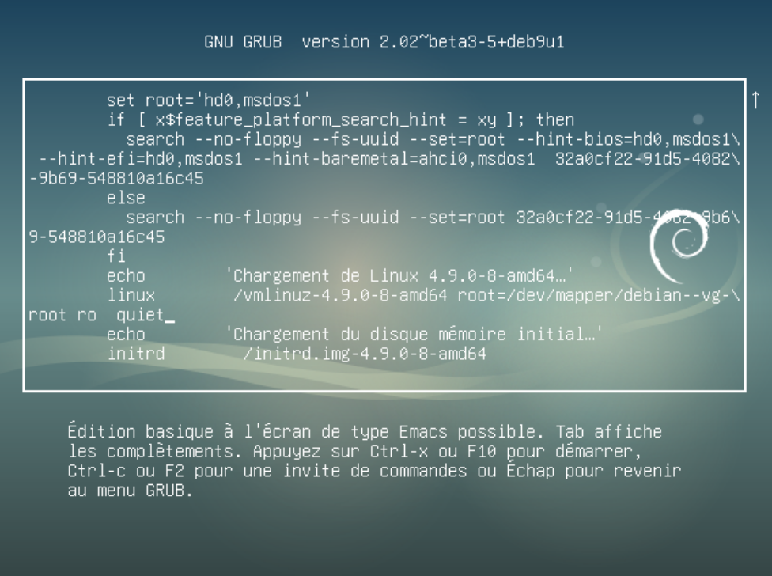
4.3.2.1 Constitution de la ligne de lancement du noyau
La ligne dans laquelle il est possible d’apporter des modifications est :
linux /vmlinuz-4.9.0-8-amd64 root=/dev/mapper/debian--vg-root ro quiet
/vmlinuz-4.9.0-8-amd64: nom de l’image noyau à chargerroot=/dev/mapper/debian--vg-root: déclaration du système de fichier contenant la racine du système d’exploitation (/)ro: indique que la racine du système d’exploitation sera montée en lecture seule. Il est important de ne pas changer ce paramètre (si l’intégrité du système de fichier doit être vérifiée, celui-ci doit être en lecture seule).quiet: indique que le noyau se lancera de façon non verbeuse.
Il est possible de modifier les options passés au kernel.
4.4 Le gestionnaire de système : systemd
systemd remplace les scripts System V (5) (ou SysV) depuis Debian 8. C’est le programme lancé par le noyau (PID 1).
Il est en charge de lancer tous les programmes suivants dans un ordre spécifique afin d’obtenir un système opérationnel pour l’utilisateur. Il est aussi en charge de mettre à disposition les différents systèmes de fichiers à travers les points de montage.
Le démarrage des programmes (service) est parallèle avec des dépendances inter-service. La gestion des services est matérialisée dans des fichiers spécifiques dans /lib/systemd/system. La constitution de ces fichiers ne sera pas abordée dans cet ouvrage.
systemd sous Debian 10 est encore fourni avec une retro-compatibilité avec les services de type System V.
4.4.1 La notion de cible
systemd utilise des cibles (target) pour savoir quelles sont les programmes à exécuter ou arrêter suivant l’intérêt de la cible. Les cibles sont constituées de la référence des différents services pris en charge par la cible.
4.4.1.1 Les différentes cibles
poweroff.target: cible permettant de stopper l’OS.rescue.target: cible permettant de passer en mode maintenance.multi-user.target: cible permettant de lancer l’OS en mode console si le système possède une interface graphique installée.graphical.target: cible permettant de lancer l’OS en mode graphique si l’OS a une GUI installée, sinon ça lancera l’OS en mode console.reboot.target: cible permettant de redémarrer l’OS.
4.4.2 Commandes de gestion de systemd
systemctl est la commande principale de la gestion du systemd.
4.4.2.1 Connaître la cible par défaut
root@debian:~# systemctl get-default
graphical.target
4.4.2.2 Lister les unités
root@debian:~# systemctl list-units
UNIT LOAD ACTIVE SUB DESCRIPTION
networking.service loaded active exited Raise network interfaces
NetworkManager.service loaded active running Network Manager
--all: permet de lister toutes les unités chargées mais inactives.
# systemctl list-units --all
4.4.2.3 Gestion des unités
Plusieurs intéraction possibles avec les unités via la commande systemctl. On peut afficher le status, activer/désactiver, démarrer/stopper, recharger un service.
Status:
eni@debian:~$ systemctl status NetworkManager
● NetworkManager.service - Network Manager
Loaded: loaded (/lib/systemd/system/NetworkManager.service; enabled; vendor preset: enabled)
Active: active (running) since Tue 2022-02-22 08:52:28 CET; 13h ago
Docs: man:NetworkManager(8)
Main PID: 1154 (NetworkManager)
Tasks: 3 (limit: 38330)
Memory: 14.5M
CPU: 17.007s
CGroup: /system.slice/NetworkManager.service
└─1154 /usr/sbin/NetworkManager --no-daemon
Executer la même commande en mode sudo/su permet d’avoir beaucoup plus de détails.
Activation/Désactivation
root@debian:~# systemctl disable bind9.service
Synchronizing state of bind9.service with SysV service script with /lib/systemd/systemd‐sysv‐install.
Executing: /lib/systemd/systemd‐sysv‐install disable bind9
root@debian:~# systemctl enable bind9.service
Synchronizing state of bind9.service with SysV service script with /lib/systemd/systemd‐sysv‐install.
Executing: /lib/systemd/systemd‐sysv‐install enable bind9
Stopper/Lancer un ou plusieurs services
# systemctl start bind9
# systemctl stop bind9
On peut lancer/stopper plusieurs services en même temps.
4.4.2.4 Changer de cible
Il est possible de changer de cible avec la commande :
# systemctl isolate maCible
4.5 Eteindre / Redémarrer le système
Même s’il est possible d’éteindre le système via la commande systemctl isolate maCible , il est fortement conseillé d’utiliser la commande shutdown sur un serveur de prod.
En effet il sera possible de préciser une heure d’extinction ou du redémarrage et d’envoyer un message console aux utilisateurs connectés.
Syntaxe:
shutdown [option] <heure> <message>
-h: arrêter le system (halt)-r: redémarrer (reboot)-c: annuler une commandeshutdown(cancel)
5. Mode Maintenance au démarrage
5.1 Méthode 1 avec GRUB
Lorsqu’on a besoin d’effectuer une maintenance sur un serveur, il est possible de modifier le menu GRUB au démarrage afin de lancer le noyau avec le commutateur single.
ATTENTION cettte méthode ne peut pas fonctionner sur un système en mode sudo sans mot de passe activé pour le compte root
Une fois le menu GRUB affiché, il suffit de sélectionner un kernel avec les touches UP/DOWN, puis d’appuyer sur la touche E pour entrer dans le menu d’édition.
Ensuite on modifiera la ligne de chargement du noyau de façon à remplacer quiet par single :
# AVANT
linux /vmlinuz-4.9.0-8-amd64 root=/dev/mapper/debian--vg-root ro quiet
# APRES
linux /vmlinuz-4.9.0-8-amd64 root=/dev/mapper/debian--vg-root ro single
ATTENTION le clavier est alors en QWERTY.
Pour démarrer, il faut ensuite appuyer sur CTRL-x
Pour sortir du module maintenance (rescue.target), il faudra taper la combinaison CTRL-d.
5.2 Méthode 2 avec GRUB
Cette méthode est plus brutale car elle demandera une extinction forcée électriquement du serveur. Mais elle peut être très pratique sur un serveur en mode sudo ou sur un serveur dont on ne connaît pas le mot de passe root.
Modifier la ligne du noyau dans GRUB :
# AVANT
linux /vmlinuz‐4.9.0‐8‐amd64 root=/dev/mapper/debian‐‐vg‐root ro quiet
# APRES
linux /vmlinuz‐4.9.0‐8‐amd64 root=/dev/mapper/debian‐‐vg‐root ro init=/bin/bash
Puis redémarrer avec CTRL-x.
Une fois redémarré, appuyer sur ENTREE. Attention le clavier sera en QWERTY.
Le système est redémarré mais le système de fichiers racine est en lecture seule, il faut lancer la commande suivante pour le basculer en lecture/écriture :
# mount -o remount,rw /
Puis faire les modifications nécessaires sur le système.
A la fin, il ne faut pas oublier de lancer une synchronisation du cache disque dur en RAM sur le disque via la commande
sync
5.3 Méthode 3 avec média d’installation
Il suffit de démarrer sur le média d’installation et dans les options avancées, choisir Rescue mode.
Puis suivre les indications.
Notes: l’option graphical rescue mode ne présente aucun intérêt.
Voir “TP3 Démarrage en mode maintenance” et “TP 4 Gestion du démarrage et des services”
6. Gestion basique du réseau
6.1 Informations générales
Pour une mise en réseau des postes client et serveur, il faut que la couche IP soit correctement réalisé.
La configuration IP a généralement besoin d’une adresse IP, d’un masque réseau et potentiellement d’une passerelle par défaut. Afin de pouvoir résoudre les noms d’hôtes, il faudra aussi renseigner un ou des serveurs DNS.
6.2 Prise d’information en cli
6.2.1 Connaître ses IP via la commande ip
Via la commande ip.
ip a/ip addr: adresses ipip r/ip route: route (passerelle par défaut)ip -c: colorise l’outputip -br: pour “brief”, imprime uniquement les iface, leur status et leur ip.
ex. $ ip -br -c a
eni@debian:~$ ip a
1: lo: <LOOPBACK,UP,LOWER_UP> mtu 65536 qdisc noqueue state UNKNOWN group default qlen 1
link/loopback 00:00:00:00:00:00 brd 00:00:00:00:00:00
inet 127.0.0.1/8 scope host lo
valid_lft forever preferred_lft forever
inet6 ::1/128 scope host
valid_lft forever preferred_lft forever
2: ens33: <BROADCAST,MULTICAST,UP,LOWER_UP> mtu 1500 qdisc pfifo_fast state UP group default qlen 1000
link/ether 00:0c:29:3b:0f:4b brd ff:ff:ff:ff:ff:ff
inet 10.6.6.6/16 brd 10.9.255.255 scope global dynamic ens33
valid_lft 605264sec preferred_lft 605264sec
inet6 fe80::20c:29ff:fe3b:f4b/64 scope link
valid_lft forever preferred_lft forever
6.2.2 Connaître sa route par défaut
eni@debian:~$ ip r
default via 10.6.255.254 dev ens33 proto static metric 100
10.6.0.0/16 dev ens33 proto kernel scope link src 10.9.50.16 metric 100
La passerelle par défaut est “10.6.255.254”, sur le réseau “10.6.0.0/16”
6.2.3 Connaître les serveurs DNS
Via le fichier /etc/resolv.conf.
eni@debian:~$ cat /etc/resolv.conf
search eni.local
nameserver 10.6.0.66
Le serveur DNS est “nameserver 10.6.0.66”
6.3 Configuration d’un système sans interface graphique
La configuration IP et DNS sur un système sans GUI se fait dans 2 fichiers de configuration.
Il est possible d’avoir une configuration simplifiée via un serveur DHCP ou une configuration statique.
Les fichiers sont /etc/network/interfaces et /etc/resolv.conf.
Notes:
- On peut modifier à la main puis sauver pour que les modifications s’appliquent immédiatement sans avoir besoin de faire quoi que ce soit d’autre.
- Le nom d’une interface réseau est défini en fonction du matériel, ex. enp5s0 (TITAN), ou ens33 (VM eni).
6.3.1 Configuration IP en DHCP
L’adressage IP en système DHCP se fait uniquement dans le fichier /etc/network/interfaces :
# The loopback network interface
auto lo
iface lo inet loopback
auto ens33
iface ens33 inet dhcp
auto/allow hot-plug: ?iface: interfaceinet: pour spécifier une IPv4.inet6: pour une IPv6dhcp: pour spécifier l’ip d’un serveur DHCPstatic: pour donner une ip statique
6.3.2 Configuration IP en adressage static et DNS static
6.3.2.1 Configuration de la couche IP statique
La configuration se fait dans le fichier /etc/network/interfaces.
# The loopback network interface
auto lo
iface lo inet loopback
auto ens33
iface ens33 inet static
address 10.6.6.6
netmask 255.255.0.0
gateway 10.6.255.254
6.3.2.2 Configuration du DNS statique
La configuration se fait dans le fichier /etc/resolv.conf
nameserver 10.6.0.66
6.3.3 Prise en compte des modifications
Pour appliquer les modifications, redémarrer le service networking.service ou en redémarrant la machine.
# systemctl restart networking.service
RAPPEL
- Activation du service :
sudo systemctl enable networking.service - Démarrage du service :
sudo systemctl start networking.service - le service peut être
failed. Auquel cas il faut mieux redémarrer la machine.
6.4 Configuration d’un système d’exploitation
La configuration d’un poste graphique se fait par un outil graphique. Il est fortement déconseillé d’utiliser le fichier de configuration du service networking. En effet, c’est un autre service qui gère la couche IP, le service NetworkManager. Il est toutefois possible de configurer NetworkManager via deux outils en ligne de commande : nmtui et nmcli.
nmtui: interface UI dans terminal (type BIOS) pour régler l’interface réseaunmcli: invite de commande pour régler l’interface réseau
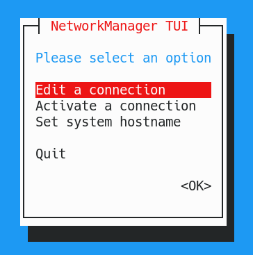
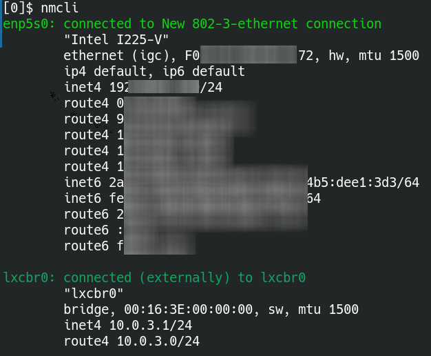
Après une configuration, il est possible de relancer graphiquement le service ou via systemctl.
# systemctl restart NetworkManager
Voir “TP5 Gestion de la configuration réseau d’un poste”
7. Gestion des paquets
La distribution Debian contient plus de 50.000 paquets, maintenus par un millier de développeurs. Les longues périodes de tests justifient la réputation de stabilité de Debian. En revanche il arrive que des paquets arrivent en phase stable, alors qu’ils sont considérés comme désuets pour d’autres distributions.
7.1 Les Releases
Une release est une version publiée par Debian, quelle soit stable ou non.
Il y a 4 types de releases :
Experimental
Elle ne contient pas tous les paquets constituant une release complète. Elle contient des paquets de logiciels en cours de développement, et pouvant par conséquent dégrader le système. Elle est utilisée principalement par les developpeurs souhaitant avoir un premier retour d’utilisateurs (expérimentés, courageux ou inconscients).
Unstable
Toujours nommée Sid, elle est en constante évolution, alimentée par de nouveaux paquets ou par les mises à jour des paquets existants. C’est une rolling release. Le paquet d’origine est créé par son mainteneur sur une architecture standard et les autobuilders vont compiler automatiquement le paquet pour les autres architectures.
Testing
Les paquets qui ne rencontrent pas de bug graves sur les différentes architectures, et après une période de quarantaine en version Sid, seront éligibles pour la version Testing. La version Testing est donc un prolongement de Unstable, mais elle minimise les risques de problèmes bloquants. L’entrée en Testing se fait automatiquement depuis Unstable et sous condition d’éligibilité.
Stable
C’est une version figée, seules les mises à jour de sécurité sont acceptées. Les paquets qui entrent dans la version Stable sont considérés exempts de bugs (bien que ce ne soit pas toujours le cas). La promotion en version Stable est réalisée sous la responsabilité du “Release Manager”.
7.2 Gestion des dépôts
Les paquets logiciels, ainsi que leurs sources, sont disponibles sur Internet dans des dépots (repositories).
Les repos permettent de mettre à jour le système ou installer de nouveaux paquets.
On peut également installer un paquet indépendamment d’un repo, mais l’ajout d’un repo contenant ce logiciel présente certains avantages : - Mise à jour : la MàJ est automatiquement prise en charge - Gestion des dépendances : si l’installation requiert des biblio non standard, celle-ci seront incluses dans le dépôt et automatiquement installées.
7.2.1 Le fichier sources.list
Le fichier /etc/apt/sources.list contient la configuration du dépôt. Voir aussi le dossier /etc/apt/sources.list.d/ pour y mettre des repo spécifiques.
eni@debian:~$ cat /etc/apt/sources.list
deb http://ftp.fr.debian.org/debian/ bullseye main
deb‐src http://ftp.fr.debian.org/debian/ bullseye main
deb http://security.debian.org/ bullseye/updates main
deb‐src http://security.debian.org/ bullseye/updates main
# squeeze‐updates, previously known as 'volatile'
deb http://ftp.fr.debian.org/debian/ bullseye‐updates main
deb‐src http://ftp.fr.debian.org/debian/ bullseye‐updates main
Moi:
eni@debian:~$ cat /etc/apt/sources.list
# See https://wiki.debian.org/SourcesList for more information.
deb http://deb.debian.org/debian bullseye main non-free contrib
deb-src http://deb.debian.org/debian bullseye main non-free contrib
deb http://deb.debian.org/debian bullseye-updates main non-free contrib
deb-src http://deb.debian.org/debian bullseye-updates main non-free contrib
deb http://security.debian.org/debian-security/ bullseye-security main non-free contrib
deb-src http://security.debian.org/debian-security/ bullseye-security main non-free contrib
Le premier champ indique le type de paquet :
+ deb : paquet binaire
+ deb-src : paquet source
Seuls les paquets binaires sont utilisés en production, les paquets sources permettant d’obtenir les fichiers sources afin de vérifier ou modifier le logiciel.
L’ordre des lignes est important, les premiers dépôts trouvés étant utilisés prioritairement.
Le deuxième champ indique le chemin de base de la source
+ http:// : url de téléchargement
+ ftp:// : site FTP de téléchargement
+ file:// : répertoire local
+ cdrom:[...] : suivi entre crochet du label du CD, indique une source type CD/DVD
Et aussi : copy, rsh, ssh.
Le troisième champ spécifie la branche disponible. Celle-ci permet de connaître la version des paquets à installer. Une branche peut être : - oldstable : l’ancienne version stable - stable : la version officielle actuelle - bullseye : une version spécifique - testing : la prochaine version stable - unstable : c’est la version qui porte toujours le nom de Sid - experimental : il est préférable de la laisser aux développeurs - autres… : la version correspond en fait à un répertoire dans l’arborescence, il est possible d’en créer à l’envie lorsqu’on gère son propre dépôt.
Le quatrième champ et les suivants indique la section, dont l’objectif est de filtrer les paquets à installer :
- main : paquets Debian standard, tous libres
- contrib : paquets libres avec dépendances propriétaires
- non-free : paquets propriétaires, sous licence non-libre
7.3 Gestion courante des paquets
- Les opérations de gestion de base sur les systèmes Debian sont réalisées en cli à l’aide de 2 outils différents :
apt-get/apt-cacheouapt. - Les opérations de recherche et de consultation pourront être réalisées avec un compte d’utilisateur standard.
-
Les opérations altérant le système seront réalisées avec les privilèges du compte root.
-
La commande
aptest plus récente et gère mieux la désinstallation des dépendances en cas de retrait d’un paquet. - La commande
apt-getest plus ancienne et sans doute plus utilisée.
Il est recommandé de toujours utiliser la même méthode, car les solveurs de paquets sont différents entre ces commandes.
7.3.1 Les commandes courantes de gestion
Afin de faciliter l’utilisation de ces commandes, le paquet bash-completion fournit une aide efficace grâce à l’autocomplétion des commandes de gestion des paquets, de leurs options et de la base des paquets disponibles et/ou installés.
Mettre à jour la base de données des paquets disponibles sur les dépôts :
$ sudo apt update
$ sudo apt-get update
Appliquer les mises à jour
# apt upgrade
# apt-get upgrade
Appliquer les mises à jour, en supprimant éventuellement d’autres paquets
# apt full-upgrade
# apt-get dist-upgrade
Installer un paquet
# apt install foo
# apt-get install foo
Désinstaller un paquet, en laissant les fichiers de configuration
# apt remove foo
# apt-get remove foo
Désinstaller un paquet, en supprimant les fichiers de configuration
# apt purge foo
# apt-get purge foo
Nettoyer le dépôt local des fichiers téléchargés suite aux màj et autres installations
# apt clean
# apt-get clean
Chercher un paquet qui correspond à une expression rationnelle
# apt search lightning
# apt-cache search lightning
Obtenir des informations détaillées sur un paquet
# apt show paquet
# apt-cache show paquet
Il existe un autre pacman nommé aptitude qui n’est pas installé par défaut. Historiquement, il est plus récent que apt-* et plus vieux que apt.
Notes sur désinstallation via apt (StackOverflow)
apt-get remove packagename
will remove the binaries, but not the configuration or data files of the package packagename. It will also leave dependencies installed with it on installation time untouched.
apt-get purge packagename or apt-get remove --purge packagename
will remove about everything regarding the package packagename, but not the dependencies installed with it on installation. Both commands are equivalent.
Particularly useful when you want to ‘start all over’ with an application because you messed up the configuration. However, it does not remove configuration or data files residing in users home directories, usually in hidden folders there. There is no easy way to get those removed as well.
apt-get autoremove
removes orphaned packages, i.e. installed packages that used to be installed as an dependency, but aren’t any longer. Use this after removing a package which had installed dependencies you’re no longer interested in.
aptitude remove packagename or aptitude purge packagename (likewise)
will also attempt to remove other packages which were required by packagename on but are not required by any remaining packages. Note that aptitude only remembers dependency information for packages that it has installed.
And many more exist. Lower-level dpkg-commands can be used (advanced), or GUI tools like Muon, Synaptic, Software Center, etc. There’s no single ‘correct way’ of removing applications or performing other tasks interacting with your package management.
The list you found are just examples. Make sure you understand the meanings and try out what it wants to do before accepting the action (you need to press Y before it actually performs the actions as proposed).
The asterisk version in the question is probably wrong; apt-get accepts a regular expression and not a glob pattern as the shell. So what happens with
sudo apt-get remove application*
is the following:
-
The shell tries to expand application* looking at the files in the current directory. If (as is normally the case) it finds nothing, it returns the glob pattern unaltered (supposing bash with default behavior here — zsh will error out).
-
apt-get will remove the packages whose name contains a string that satisfies the regular expression application*, that is, applicatio followed by an arbitrary number of n: applicatio, application, applicationn, libapplicatio, etc.
-
To see how this can be dangerous, try (without root for double safety) apt-get -s remove “wine*” (-s will simulate the thing instead of doing it) — it will say is going to remove all packages that has “win” in their name and the dependant, almost the entire system…
Probably, the command that was meant is really
sudo apt-get remove "^application.*"
(note the quotes and the dot) which will remove all packages whose name starts with application.
These commands,
sudo updatedb # <-- updates the locate database (index). harmless
sudo locate application # <-- locates the file 'application'. harmless
sudo rm -rf (file/folder name) # <-- removes files/dirs recursively. dangerous.
are completely outside the scope of the package management. Do not remove files belonging to packages without using the package manager! It will get confused and is the wrong way to do things.
If you don’t know to which package a file belongs, try this:
dpkg -S /path/to/file
7.3.2 La commande dpkg
dpkg est la base du système de gestion des paquets Debian. Il est l’équivalent de la commande rpm pour RedHat.
Il a été conçu pour :
- installer / mettre à jour des paquets Debian
- supprimer des paquets
- fournir des informations
Il n’était pas question, à l’epoque de sa création en 1993, de télécharger des fichiers sur internet. C’est pourquoi dpkg ne gère pas les dépendances, on l’utilise donc rarement aujourd’hui pour l’installation des paquets.
En revanche, il permet d’obtenir des informations précieuses sur les paquets ou les fichiers installés à partir de paquets.
Lister les paquets disponibles dans les dépôts et contenant la chaîne “ftp”.
eni@debian:~$ sudo dpkg -l "*ftp*" Desired=Unknown/Install/Remove/Purge/Hold | Status=Not/Inst/Conf-files/Unpacked/halF-conf/Half-inst/trig-aWait/Trig-pend |/ Err?=(none)/Reinst-required (Status,Err: uppercase=bad) ||/ Name Version Architecture Description +++-===================-============-============-=========================================================================== ii openssh-sftp-server 1:8.4p1-5 amd64 secure shell (SSH) sftp server module, for SFTP access from remote machines un php-ftp <none> <none> (no description available) un php7.3-ftp <none> <none> (no description available) un php7.4-ftp <none> <none> (no description available) un sftp <none> <none> (no description available) un webmin-proftpd <none> <none> (no description available) un webmin-wuftpd <none> <none> (no description available)
Noter les préfixes indiquant le souhait et l’état du paquet.
Lister les fichiers installés par un paquet (installé) :
# dpkg -L ftp
Lister le paquet à l’origine d’un fichier :
# dpkg ‐S /sbin/ip
iproute2: /sbin/ip
7.3.3 Les fichiers journaux
Les fichiers journaux permettent de consulter l’historique des installations et mises à jour. Chaque utilitaire dispose de son propre fichier de logs :
apt-get: fichier/var/log/apt/history.logapt: fichier/var/log/apt/history.logdpkg: fichier/var/log/dpkg.log
Les commandes apt-get et apt s’appuient sur dpkg pour l’installation proprement dite, on doit donc retrouver dans les logs de dpkg toutes les interventions réalisées sur les paquets.
7.4 Installation à partir des sources
Technique avancée qui varie selon le type de source récupéré. Il y a tout de même un cheminement qui reste le même :
L’environnement de compilation
Il est important de faire un espace de compilation spécifique à un utilisateur qui n’est pas root afin d’éviter des problématiques systèmes et sa sécurisation.
La lecture de la documentation
La documentation est généralement disponible sous un fichier README ou INSTALL. Celui-ci contient généralement les autres étapes de la construction de l’application, avec la liste des dépendances de construction de fonctionnement.
Préparation de la compilation
Cette étape va vérifier s’il y a toutes les dépendances de compilation sur le système puis générer un fichier MakeFile contenant toutes les informations de compilation et d’installation.
$ ./configure
Compilation
Cette étape va permettre de créer l’application compilée à partir de ses sources en se basant sur le fichier MakeFile contenant toutes les informations de compilation.
$ make
A l’issue de cette étape, l’application n’est toujours pas installée dans le système mais elle est totalement fonctionnelle.
Installation
C’est la seule étape à réaliser avec les privilèges root car cette étape est une simple copie de l’application dans les répertoires système comme /opt/bin par exemple.
$ sudo make install
Voir TP 6 - Gestion des installations logicielles
8. Gestion des espaces de stockage
8.1 Partitionner un disque
Sous Linux, un disque dur est représenté par un périphérique de type bloc. Afin de mieux comprendre comment Linux présentera ce périphérique et ses sous-divisions, il est primordiale de comprendre le partitionnement.
8.1.1 La norme Intel du MBR
Créée en 1983, la norme Intel indique que les 512 premiers octets d’un disque dur sont utilisés pour l’amorçage du système.
Le MBR (Master Boot Record) est constitué de 2 principaux éléments :
- le boot loader : 446 premiers octets. Celui-ci contient le stage 1 de GRUB.
- la table de partition : 64 octets, contient la position des 4 partitions primaires.
Du fait de ne pouvoir avoir l’information que de 4 partitions dans la table de partition, la norme Intel MBR a choisi de donner la possibilité d’avoir un type particulier de partition principale : la partition étendue.
La partition étendue pourra stocker les informations de 56 partitions logiques
La plus grosse problématique du MBR est la taille limite des partitions fixée au maximum à 2.2To
8.1.2 La norme Intel GPT
Créée en 2013 le GPT (GUID Partition Table) est le remplaçant du MBR.
- Nombre maximum de partitions : 128 (voire 256)
- Limite théorique des partitions et des disques : 9.4 Zo (Zeta octets)
8.1.3 Nommage des partitions sous Linux
8.1.3.1 Nommage des disques
Sous Linux, les disques de type SCSI/SATA sont matérialisés dans le répertoire /dev suivi de sd puis la lettre correspondant au disque, dans l’ordre de détection.
Ex. /dev/sda sera le premier disque détecté, puis /dev/sdb, etc.
Cela correspond au disque en entier. Pour manipuler des partitions, il faudra ajouter le numéro de la partition, ex. /dev/sda2.
8.1.3.2 Nommage des partitions
Linux ne nomme pas les partitions à la suite. Il va réserver les chiffres de 1 à 4 pour les partitions principales (principale et étendue).
Quel que soit le nombre de partitions principales, s’il y a une partition étendue alors les partitions logiques commenceront quoi qu’il arrive à 5.
Exemple:
Le 2e disque du système est partitionné avec 2 partitions principales et une partition étendue contenant 3 partitions logiques. Linux présentera tout cela de cette façon :
/dev/sdbdisque entier/dev/sdb11e partition principale/dev/sdb22e partition principale/dev/sdb3partition étendue/dev/sdb51e partition logique/dev/sdb62e partition logique/dev/sdb73e partition logique
Notes:
- A logical partition (LPAR) is a subset of a computer’s hardware resources, virtualized as a separate computer.
- A primary partition contains one file system.
-
An HDD may contain only one extended partition, but that extended partition can be subdivided into multiple logical partitions. GPT only has the primary partition, doesn’t have the extended partition and the logical partition.
-
Partition primaire : un disque contient un max de 4 partitions primaire (le MBR est contenu sur le premier secteur du disque n’a que 4 emplacements pour stocker des adresses de partitions)
- Partition étendue : si on veut plus de 4 partitions, une des partitions sera alors remplacer par une partition étendue qui se divisera en partition logiques (aka partitions secondaires).
- Partition logiques : partitions supplémentaires quand le nombre de partitions dépasse 4. La quatrième partition s’appelle alors la partition étendue et contiendra les partitions supplémentaire (partitions logiques)
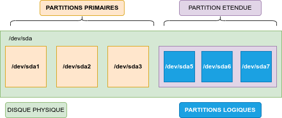
8.1.4 Outils de partitionnement
Il existe plusieurs outils console ou graphique pour la gestion des partitions.
Les plus courants : parted, gparted, fdisk, sfdisk, cfdisk, etc.
8.1.4.1 fdisk
Syntaxe :
fdisk [option] <periph de stockage>
8.1.4.1.1 Prise d’information
Afficher la table de partition du périphérique :
root@debian:~# fdisk ‐l /dev/sda
Disque /dev/sda : 20 GiB, 21474836480 octets, 41943040 secteurs
Unités : secteur de 1 × 512 = 512 octets
Taille de secteur (logique / physique) : 512 octets / 512 octets
taille d'E/S (minimale / optimale) : 512 octets / 512 octets
Type d'étiquette de disque : dos
Identifiant de disque : 0x732e6aa1
Périphérique Amorçage Début Fin Secteurs Taille Id Type
/dev/sda1 * 2048 499711 497664 243M 83 Linux
/dev/sda2 501758 41940991 41439234 19,8G 5 Étendue
/dev/sda5 501760 41940991 41439232 19,8G 8e LVM Linux
8.1.4.1.2 Partitionnement
L’utilisation de fdisk est basique mais efficace. Il faut connaître les étapes importantes mises à disposition parmi toutes les options disponibles.
root@debian:~# fdisk /dev/sdb
Welcome to fdisk (util-linux 2.36.1).
Changes will remain in memory only, until you decide to write them.
Be careful before using the write command.
Command (m for help): m
Help:
GPT
M enter protective/hybrid MBR
Generic
d delete a partition
F list free unpartitioned space
l list known partition types
n add a new partition
p print the partition table
t change a partition type
v verify the partition table
i print information about a partition
Misc
m print this menu
x extra functionality (experts only)
Script
I load disk layout from sfdisk script file
O dump disk layout to sfdisk script file
Save & Exit
w write table to disk and exit
q quit without saving changes
Create a new label
g create a new empty GPT partition table
G create a new empty SGI (IRIX) partition table
o create a new empty DOS partition table
s create a new empty Sun partition table
Création d’une partition avec fdisk
- Lors de la création d’une partition
fdiskpropose de créer une partition primaire ou étendue - Si une partition étendue a déjà été créée, fdisk proposera une partition logique,
- puis son numéro (conseil: laisser faire le système),
- le bloc de début (laisser faire le système)
- et la taille de la partition, en bloc par défaut mais il est possible de préciser une taille à ajouter avec
+<int><unité>(ex.+20G)
Commande (m pour l'aide) : n
Type de partition
p primaire (0 primaire, 0 étendue, 4 libre)
e étendue (conteneur pour partitions logiques)
Sélectionnez (p par défaut) : p
Numéro de partition (1‐4, 1 par défaut) :
Premier secteur (2048‐62914559, 2048 par défaut) :
Dernier secteur, +secteurs ou +taille{K,M,G,T,P} (2048‐62914559, 62914559 par défaut) : +20G
Une nouvelle partition 1 de type “Linux” et de taille 20 GiB a été créée.
Commande (m pour l'aide) : p
Disque /dev/sdb : 30 GiB, 32212254720 octets, 62914560 secteurs
Unités : secteur de 1 × 512 = 512 octets
Taille de secteur (logique / physique) : 512 octets / 512 octets
taille d'E/S (minimale / optimale) : 512 octets / 512 octets
Type d'étiquette de disque : dos
Identifiant de disque : 0x0ab85bf5
Périphérique Amorçage Début Fin Secteurs Taille Id Type
/dev/sdb1 2048 41945087 41943040 20G 83 Linux
Une fois les partitions créées, il ne faut pas oublier de définir le type de partition via la commande t.
Liste des types de partitions connus par fdisk
Pour voir la liste des types de partitions connus : Commande (m pour l'aide) : l
Les plus notables : - 7 HPFS/NTFS/exFAT - W95 FAT32 - 82 partition d’ech (swap ?) - 83 Linux - 8e LVM Linux - fd RAID Linux auto
Déclarer le type de partition est utile pour savoir quel type de système de fichier sera installé sur la partition.
Une fois les créations de partitions effectuées, l’enregistrement des modifications se fait via la commande w.
Commande (m pour l'aide) : w
La table de partitions a été altérée.
Appel d'ioctl() pour relire la table de partitions.
Synchronisation des disques.
8.2 LVM Logical Volume Manager
La gestion de volumes logiques apporte une souplesse dans la gestion des espaces de stockage. Le partitionnement traditionnel est problématique lorsqu’on souhaite agrandir un système de fichier.
L’agrandissement d’une partition est obligatoirement fait à froid et peut se faire uniquement avec un espace contigu à la partition à agrandir. Ce qui peut poser un problème de souplesse en production.
Le LVM permet de s’affranchir des limites physiques des périphériques. LVM implémente une couche logique pour une gestion plus souple et plus évolutive des volumes de stockage.
On gère plusieurs types d’éléments : - Les volumes physiques (PV) : désignent les périphériques intégrés dans LVM - Les groupes de volumes (VG) : permettent de regrouper les volumes physiques - Les volumes logiques (LV) : désignent les unités définies au sein des groupes de volumes
La création d’un ou plusieurs groupes de volumes sera faites à partir des volumes physiques disponibles. Les groupes de volumes seront ensuite découpés en volumes logiques. Ces volumes logiques pourront alors être utilisés comme n’importe quel volume de stockage.
Les commandes de gestion s’organisent autour de ces dénominations et respectent toujours la même logique. Pour la création, on aura par exemple :
pvcreate: création des volumes physiquesvgcreate: création des groupes de volumeslvcreate: création des volumes logiques
Il en sera de même pour toutes les autres directives : display, extend, reduce, remove, etc.
8.2.1 Pré-requis
Définir l’identifiant des partitions à utiliser avec fdisk, utiliser l’id 8e pour Linux LVM.
Device Boot Start End Blocks Id System
/dev/sdb1 1 486 3903763+ 8e Linux LVM
8.2.2 Créer des partitions LVM
Créer des volumes physiques
# pvcreate /dev/sdb1 /dev/sdb2 /dev/sdb3
Il est possible de créer un PV de tout un disque. Il faut préalablement effacer les 512 premiers octets.
Créer des groupes de volumes
# vgcreate vggroup1 /dev/sdb1
Créer des volumes logiques
# lvcreate -n lv1 -L 150M vggroup1
-n NOM_DU_VOLUME: nom du volume-L TAILLE_AVEC_UNITES: taille avec [K|M|G|T|E] (KO, MO, GO, TO, EO)
Il y aura 2 chemins possibles pour manipuler le volume logique :
- directement dans
/dev/<vg>/<lv> - ou dans
/dev/mapper/<vg>-<lv>
8.2.3 Ajouter, agrandir, diminuer une partition LVM
Ajouter des volumes physiques au groupe de volume
# vgextend vggroup1 /dev/sdb2 /dev/sdb3
Agrandir un volume logique
# lvextend ‐L +400M /dev/vggroup1/lv1 # ajoute 400M au volume
# lvextend ‐L 1G /dev/vggroup1/lv1 # fixe à 1 Go la taille du volume
# lvdisplay ‐m /dev/vggroup1/lv1 # affiche les volumes occupés
De la même façon, lvreduce permet de réduire la taille d’un volume logique.
Attention le système de fichier ne prendra pas en compte automatiquement ces changements. Il faudra forcer un redimensionnement pour pouvoir utiliser tout l’espace.
Redimensionner le système de fichier de type ext
# resize2fs -fp /dev/vggroup1/lvl
-f: force (permet de passer outrefsck)-p: affiche l’avancement (progress)
Un démontage préalable du volume peut être nécessaire selon le type de système de fichier.
8.2.4 Afficher les informations LVM
Plusieurs commandes sont disponibles pour obtenir des informations sur les volumes LVM configurés :
- infos résumées avec “vs” :
pvs,vgs,lvs - infos détaillées avec “display” :
pvdisplay,vgdisplay,lvdisplay
Afficher les infos résumées sur tous les groupes de volumes :
root@debian:~# vgs
VG #PV #LV #SN Attr VSize VFree
vggroup1 1 5 0 wz‐‐n‐ 15,76g 0
Afficher les informations détaillées sur tous les groupes de volumes
# vgdisplay
Afficher les informations résumées sur tous les LV du groupe de volumes vggroup1
# lvs /dev/vggroup1
Afficher les informations détaillées du volume lv1 du groupe de volumes vggroup1
# lvdisplay /dev/vggroup1/lv1
Toutes les commandes LVM sont également disponibles dans un shell dédié accessible via la commande lvm.
8.3 Gestion des systèmes de fichiers
8.3.1 Considérations générales
Tous les systèmes de fichiers de type Unix sont basés sur le même principe et les mêmes éléments élémentaires. Les systèmes de fichiers Unix sont ségmentés en blocs de données, actuellement à 4 Ko par défaut. Chaque bloc pourra avoir différentes structures.
- superbloc : bloc contenant les infos vitales du système de fichier
- inode : bloc contenant les inodes contenant les infos d’un fichier
- bloc d’indirection : bloc redirigeant vers d’autres blocs (cf. plus loin dans ce chapitre)
- bloc de données : bloc contenant les données réelles du fichier
- table des inodes : bloc contenant la liste des blocs d’inodes
- table des inodes libres : bloc contenant la liste des inodes libres
- table des bloc libres : bloc contenant la liste des blocs de données libres
8.3.1.1 Le superbloc
Le superbloc contient les infos vitales du filesystem. Donc par mesure de sécurité, il est dupliqué à différents endroits du FS.
Il contient les infos suivantes :
- taille des blocs
- taille du FS
- nombre de montage effectués
- nombre maximum de montage avant vérification
- date du dernier montage
- intervalle maximum entre deux montages avant vérification
- un pointeur vers l’inode racine du système de fichiers (FS)
8.3.1.2 Inodes et blocs d’indirection
Les inodes sont regroupés par blocs dans un système de fichiers. La taille d’un inode est de 128 octets. Avec des blocs de 4 Ko, il y aura 32 inodes par bloc d’inodes.
Un inode contient des infos propres au fichier qu’il représente:
- type de fichier : voir tableau (-, d, l, etc.)
- mode ou droit d’accès : en octal, ex. 0644 pour
rw-r--r-- - nombre de liens physique : si la valeur tombe à zéro, le fichier est considéré comme supprimé
- UID : User ID du propriétaire (user)
- GID : Group ID propriétaire (group)
- taille du fichier : en octets
- champs dates :
atime(dernier accès au fichier),ctime(dernier changement des infos de l’inode),mtime(dernier changement des données réelle du fichier) - 15 adresses pointant vers les blocs de données réelles du fichier
IMPORTANT : l’inode ne possède pas le nom du fichier, celui-ci est renseigné dans le répertoire contenant ce fichier .
Type de fichiers :
| code | type |
|---|---|
| - | standard (file) |
| d | directory |
| l | lien symbolique |
| b | fichier spécial mode block |
| c | fichier spécial mode caractère |
| n | fichier spécial mode réseau (node) |
| p | named pipe |
8.3.2 Système de fichier EXT
L’ext2, l’ext3 et l’ext4 sont implémentés sur Debian.
La différence entre ext2 et ext3 est la journalisation, améliorant la récupération du système de fichier en cas de crash (extinction brutale du PC par ex.)
Le système de fichier ext4 est une amélioration de l’ext3 mais réécrit de zéro.
8.3.2.1 L’EXT4
C’est le FS par défaut depuis Debian 9. Son avantage est qu’il est peu sujet à la fragmentation grâce à la préallocation des blocs de données contigus.
Caractéristiques :
- taille maximale de fichier : 16 Tio (avec des blocs de 4 Ko)
- nombre maximal de fichiers : 4 milliards
- taille maximale du nom de fichiers : 255 octets
- taille maximale de volume : 1 Eio (limité à 16 Tio par e2fsprogs avec des blocs de 4 Ko)
8.3.3 Les autres systèmes de fichiers sous Debian
Il y a d’autres systèmes de fichiers gérés nativement sous Debian, entre autres : NTFS, FAT.
Il est possible d’installer d’autres outils de gestion de systèmes de fichiers comme XFS, Btrfs, etc.
8.3.4 Outils de gestion des systèmes de fichiers
8.3.4.1 Création (mkfs)
Le formatage va installer un système de fichiers sur un périphérique de stockage. Sans un FS, le périphérique de stockage est inutilisable.
Un périphérique de stockage peut être une partition (par ex. /dev/sdb1) ou un volume logique (par ex. /dev/vgta/line ou /dev/mapper/vgta-rien).
Syntaxe :
mkfs.[FSTYPE] OPTIONS PERIPH_STOCKAGE
mkfs.[fstype] est une commande simplifiant la mémorisation des commandes de création de système de fichier. C’est en fait une fausse commande qui fait appel à la vraie commande de création.
Ex. mkfs.ext4 est la commande mke2fs avec des options préconfigurées pour générer de l’ext4
Exemple
root@deb-desktop:~# mkfs.ext4 -h
mkfs.ext4: invalid option -- 'h'
Usage: mkfs.ext4 [-c|-l filename] [-b block-size] [-C cluster-size]
[-i bytes-per-inode] [-I inode-size] [-J journal-options]
[-G flex-group-size] [-N number-of-inodes] [-d root-directory]
[-m reserved-blocks-percentage] [-o creator-os]
[-g blocks-per-group] [-L volume-label] [-M last-mounted-directory]
[-O feature[,...]] [-r fs-revision] [-E extended-option[,...]]
[-t fs-type] [-T usage-type ] [-U UUID] [-e errors_behavior][-z undo_file]
[-jnqvDFSV] device [blocks-count]
root@deb-desktop:~# mkfs.ext4 -L VAR /dev/root/var
mke2fs 1.46.2 (28-Feb-2021)
Creating filesystem with 5242880 4k blocks and 1310720 inodes
Filesystem UUID: 7647c2e1-1e58-4008-befb-7958e19dc124
Superblock backups stored on blocks:
32768, 98304, 163840, 229376, 294912, 819200, 884736, 1605632, 2654208,
4096000
Allocating group tables: done
Writing inode tables: done
Creating journal (32768 blocks): done
Writing superblocks and filesystem accounting information: done
8.3.4.2 Modification
tune2fs
tune2fs permet de modifier des options d’un système de fichier type ext. Il permet aussi de récupérer les informations du superbloc.
Syntaxe:
tune2fs OPTIONS PERIPH_STOCKAGE
Options usuelles :
-Lpermet de modifier l’étiquette du FS (label)-lpermet d’afficher les infos du superbloc-ipermet de modifier l’intervalle entre deux vérifications-cpermet de modifier le nombre maximum de montage déclenchant une vérification
resize2fs
resize2fs permet de changer la taille d’un système de fichiers.
Syntaxe:
resize2fs OPTION PERIPH_STOCKAGE
8.3.4.3 Vérification (fsck)
La vérification d’un système de fichiers permet de contrôler l’intégralité des données présentes sur celui-ci. Il est possible de le faire manuellement tout comme il possible de l’automatiser au démarrage.
fsck.FSTYPE OPTIONS PERIPH_STOCKAGE
Comme pour les commandes de formatage, la vérification peut facilement se faire avec les commandes fsck.FSTYPE.
8.3.4.4 Prise d’information
Il est parfois utile de trouver les infos type, etiquette et UUID d’un système de fichiers.
blkid
La commande blkid permet d’afficher les infos relatives à un périphérique particulier. Sans argument, elle affichera les info relatives à tous les périphériques formatés.
Syntaxe:
blkid OPTION PERIPH_STOCKAGE
root@debian:~# blkid /dev/sdb1
/dev/sdb1: UUID="42237738‐92a8‐4ddf‐9326‐293152e8eed7" TYPE="ext4" PARTUUID="4dced6bd‐01"
root@debian:~# blkid
/dev/sda1: UUID="32a0cf22‐91d5‐4082‐9b69‐548810a16c45" TYPE="ext2" PARTUUID="732e6aa1‐01"
/dev/sda5: UUID="VDfsmc‐gci2‐BOct‐IlVv‐rfcR‐R5IA‐ozNO8x" TYPE="LVM2_member" PARTUUID="732e6aa1‐05"
/dev/sr0: UUID="2019‐02‐16‐12‐34‐06‐00" LABEL="Debian 9.8.0 amd64 1" TYPE="iso9660" PTUUID="49506c1e" PTTYPE="dos"
/dev/mapper/debian‐‐vg‐root: UUID="bffe9183‐34a3‐49d4‐b1a4‐a97bac0e95fc" TYPE="ext4"
/dev/mapper/debian‐‐vg‐swap_1: UUID="d5d6cc72‐10f5‐48e4‐bd60‐3b46fd5385bb" TYPE="swap"
/dev/sdb1: UUID="42237738‐92a8‐4ddf‐9326‐293152e8eed7" TYPE="ext4" PARTUUID="4dced6bd‐01"
lsblk
La commande lsblk permet d’afficher sous forme arborescente les infos relatives aux périphériques et aux systèmes de fichiers.
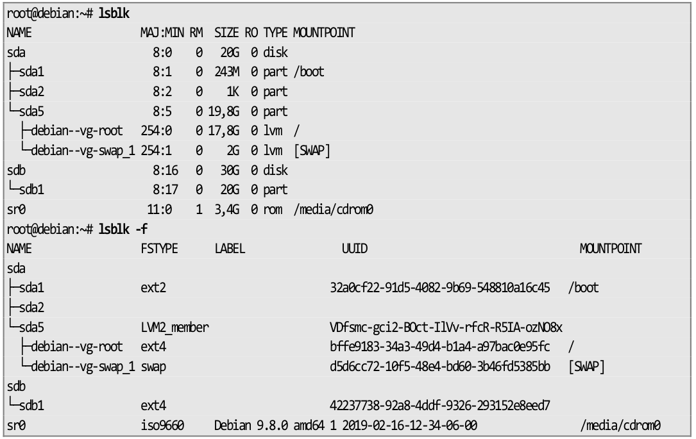
Voir TP 7 - Gestion des espaces disque
8.4 Montage d’un système de fichiers
Sous un OS Linux, comme tout est fichier, la mise à disposition d’un système de fichier venant d’un espace de stockage (partition, LVM, RAID, etc.) se fera en définissant un répertoire comme point de montage.
Le simple fait de rendre un répertoire comme point de montage, fait que tous les fichiers et repertoires présents dans ce répertoire ne seront plus accessibles. Il est donc fortement conseillé de prendre un répertoire vide comme futur point de montage.
Pour un montage temporaire, il est conseillé d’utiliser le répertoire /mnt. S’il faut monter plusieurs FS de façon temporaire, il est possible de créer des sous-dossiers dans /mnt pour chacun des FS.
8.4.1 Prise d’infos sur le système de fichiers avec blkid
Afin de monter un système de fichier (FS), il est utile de bien connaître le type de FS présent sur un périphérique et avoir plusieurs informations complémentaires comme son étiquette ou son UUID (unique ID).
La commande blkid permet de trouver des infos sur les périphériques, telles que l’UUID, le type, le label (si existe) d’un système de fichier.
root@debian:~# blkid
/dev/sda1: UUID="32a0cf22‐91d5‐4082‐9b69‐548810a16c45" TYPE="ext2" PARTUUID="732e6aa1‐01"
/dev/sda5: UUID="VDfsmc‐gci2‐BOct‐IlVv‐rfcR‐R5IA‐ozNO8x" TYPE="LVM2_member" PARTUUID="732e6aa1‐05"
/dev/sr0: UUID="2019‐02‐16‐12‐34‐06‐00" LABEL="Debian 9.8.0 amd64 1" TYPE="iso9660" PTUUID="49506c1e" PTTYPE="dos"
/dev/mapper/debian‐‐vg‐root: UUID="bffe9183‐34a3‐49d4‐b1a4‐a97bac0e95fc" TYPE="ext4"
/dev/mapper/debian‐‐vg‐swap_1: UUID="d5d6cc72‐10f5‐48e4‐bd60‐3b46fd5385bb" TYPE="swap"
/dev/sdb1: UUID="42237738‐92a8‐4ddf‐9326‐293152e8eed7" TYPE="ext4" PARTUUID="4dced6bd‐01"
root@debian:~# blkid /dev/sdb1
/dev/sdb1: UUID="42237738‐92a8‐4ddf‐9326‐293152e8eed7" TYPE="ext4" PARTUUID="4dced6bd‐01"
8.4.2 Montage manuel avec mount
La commande mount permet de mettre à disposition un système de fichiers dans un répertoire.
Syntaxe:
mount OPTION /dev/periph/source /point/de/montage
Options possibles:
-t FSTYPE: détermine le type de système de fichiers à monter-o OPTION: permet de définir différentes options séparées par une virgulesync|async: active ou non l’utilisation de la mise en tampon en RAM des données avant écriture dans le système de fichiers. Défaut :asyncexec|noexec: permet d’exécuter ou non les fichiers executables présents sur le FS. Défaut :execro|rw: monte le FS en lecture seule (ro) ou en lecture/ecriture (rw). Défaut :rwsuid|nosuid: permet d’exécuter ou non les binaires avec l’interprétation du SUID positionné dessus. Défaut :suidremount: permet de changer une ou des options de montage sans démonter le système de fichiers.
Exemple:
# mount -t ext4 /dev/sdb1 /mnt
8.4.3 Prise d’information des points de montage
Les commandes mont et findmnt permettent d’afficher des informations sur les différents pour des montages.
8.4.3.1 mount
La sortie de mount est faiblement lisible mais permet de savoir facilement les options de montage appliquées.
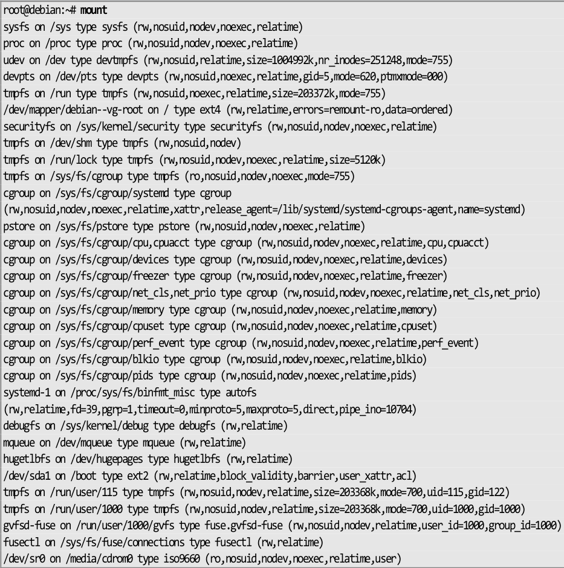
8.4.3.2 findmnt
Cette commande permet une meilleure lisibilité et surtout de prendre l’information sur un seul point de montage.
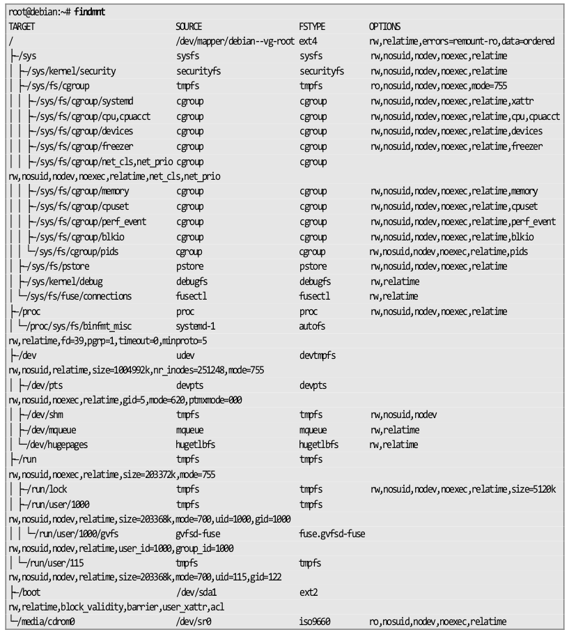
Pour voir l’information sur un seul point de montage, il suffit de cibler :
root@debian:~# findmnt /mnt
TARGET SOURCE FSTYPE OPTIONS
/mnt /dev/sdb1 ext4 rw,relatime,data=ordered
8.5 Montage automatique (fstab)
Les montages automatiques sont effectués par systemd au tout début du démarrage du système d’exploitation. La déclaration des montages automatiques est présentes dans le fichier /etc/fstab.
# /etc/fstab: static file system information.
#
# Use 'blkid' to print the universally unique identifier for a
# device; this may be used with UUID= as a more robust way to name devices
# that works even if disks are added and removed. See fstab(5).
#
# systemd generates mount units based on this file, see systemd.mount(5).
# Please run 'systemctl daemon-reload' after making changes here.
#
# <file system> <mount point> <type> <options> <dump> <pass>
/dev/mapper/root-racine / ext4 errors=remount-ro 0 1
/dev/mapper/root-home /home ext4 defaults 0 2
/dev/mapper/root-windows /windows vfat utf8 0 0
/dev/mapper/root-swap none swap sw 0 0
/dev/sr0 /media/cdrom0 udf,iso9660 user,noauto 0 0
Cette colonne déclare le système à monter. Cette source peut être exprimée de plusieurs façons :
- via un UUID : plus sécurisé mais humainement moins lisible
- via un label : humainement plus lisible mais peut poser problème en cas de doublons
- via le chemin du périphérique : on l’utilise principalement pour les LVM car il n’est pas possible d’avoir plusieurs volumes LVM avec le même nom sur un système. Il est fortement déconseillé de l’utiliser pour des partitions (ex.
/dev/sdb1)
Cette colonne déclare le répertoire de montage du système de fichiers.
Cette colonne déclare le type de FS. Il est possible de mettre auto mais cela ralentit le montage des périphériques.
Cette colonne déclare les options de montage. Il est possible de mettre defaults. Les options dans defaults sont async, nouser, rw, auto, suid, dev
Cette colonne est très peu utilisée. Elle correspond à des paramètres de configuration de la commande dump.
Cette section permet de savoir si le système doit analyser l’intégrité du FS afin de corriger les problèmes avant de le monter.
- si pass = 0 : pas de vérification
- si pass > 0 : analysera le système de fichiers (1 pour la racine, 2 pour les autres)
Afin de se garantir de la bonne intégration d’une nouvelle ligne dans le fichier /etc/fstab, il est important de la tester avant le redémarrage du poste. Le moyen le plus simple est d’utiliser la commande mount en ne précisant que le point de montage.
root@debian:~# mount /srv/data
mount: impossible de trouver /srv/data dans /etc/fstab
Dans le cas où une ligne indique /srv/data dans le fichier fstab alors le montage se fera par rapport aux différentes déclarations.
Si la commande ne renvoie rien, c’est que le montage s’est correctement effectué.
Même si la littérature mentionne souvent l’utilisation de la commande mount -a pour tester son fichier /etc/fstab, il est fortement déconseillé de l’utiliser car celle-ci tente de monter toutes les entrées du fichier, et pas uniquement la nouvelle ligne à tester.
8.6 Commandes informatives utiles
8.6.1 Information sur les systèmes de fichiers montés (df)
df
La commande df permet de prendre des informations sur les systèmes de fichiers montés.
Syntaxe
df OPTIONS /point/de/montage
Options usuelles
-h: affiche les tailles en puissance de 1024 (K, M, G, …)-i: affiche les informations sur les inodes
Exemple
root@debian:~# df ‐h
Sys. de fichiers Taille Utilisé Dispo Uti% Monté sur
udev 982M 0 982M 0% /dev
tmpfs 199M 22M 178M 11% /run
/dev/mapper/debian‐‐vg‐root 18G 4,3G 13G 26% /
tmpfs 994M 0 994M 0% /dev/shm
tmpfs 5,0M 4,0K 5,0M 1% /run/lock
tmpfs 994M 0 994M 0% /sys/fs/cgroup
/dev/sda1 236M 37M 187M 17% /boot
tmpfs 199M 32K 199M 1% /run/user/115
tmpfs 199M 32K 199M 1% /run/user/1000
/dev/sr0 3,4G 3,4G 0 100% /media/cdrom0
/dev/sdb1 20G 45M 19G 1% /mnt
8.6.2 Information sur l’espace utilisé par les répertoires (du)
La commande ls -l ne permet pas de connaître la taille d’un répertore. En effet, elle remonte juste la taille utilisée par l’inode du répertoire et non son contenu.
La commande du est la commande utilisée pour connaître la taille d’un répertoire.
Syntaxe
du OPTION /chemin/du/dossier
Options usuelles
-h: affiche les tailles en puissance de 1024 (K, M, G, …)-s: n’affiche pas les sous-répertoires mais uniquement le répertoire en argument.
Exemple
root@debian:~# du -hs /etc
6.9M /etc
Voir TP 8 - Gestion des systèmes de fichiers et montage
9. Gestion des utilisateurs et des groupes
Sous Linux, les utilisateurs sont représentés par deux valeurs importantes : l’UID (User ID) et le GID (Group ID - id du groupe principal).
Mais il est possible d’un utilisateur appartienne à plusieurs groupes. Il y aura donc les notions de groupe principal et de groupe secondaire. Le groupe principal étant le groupe attribué à l’utilisateur au moment de sa connexion.
Il existe 3 type d’utilisateurs
-
root: UID=0, GID=0
C’est l’administrateur du système. Il a tout pouvoir. Il est conseillé de ne pas se logger directement sous ce compte mais de le devenir via la commandesu -(où le tiret permet de recharger les variables locales). Sur certains systèmes, il est même impossible de se connecter en root dans l’interface graphique. -
daemon: UID=1-999, GID=1-999
Représentent les utilisateurs applicatifs (les services). En effet, sous Linux, 99% des services ne sont pas executés sous l’identité de root mais sous leur propres identité à des fins de sécurité. -
Utilisateur: UID et GDI > 1000
Représentent les utilisateurs “humains”.
9.1 Gestion des groupes
Les informations des groupes sont dans deux fichiers : /etc/group et /etc/gshadow.
9.1.1 /etc/group
Ce fichier est composé de plusieurs champs séparés par “:”. Ces champs sont respectivement :
- nom du groupe
- mdp chiffré
- GID
- liste des membres ayant ce groupe en groupe secondaire
S’il y a un x dans la colonne du mot de passe, cela indique que le mot de passe est dans le fichier /etc/gshadow.
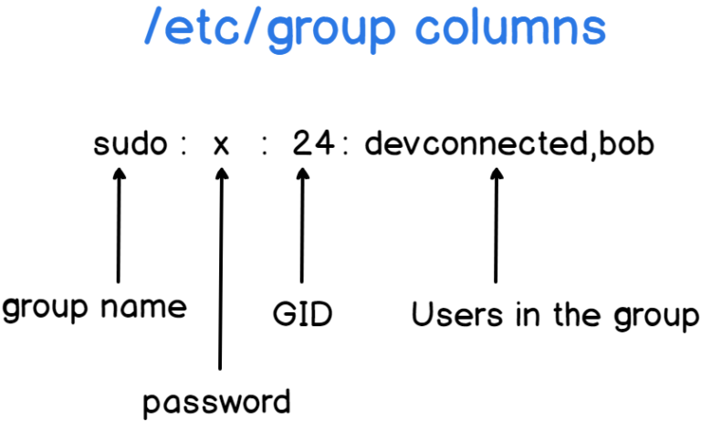
Exemple :
$ cat /etc/group
root:x:0:
daemon:x:1:
bin:x:2:
sys:x:3:
adm:x:4:
tty:x:5:
disk:x:6:
[...]
www-data:x:33:
shadow:x:42:
users:x:100:
nogroup:x:65534:
ssh:x:112:
[...]
eni:x:1000:
systemd-coredump:x:999:
9.1.2 /etc/gshadow
Ce fichier contient les informations cachées sur le groupes séparées par des “:”. Il est rarement utilisé.
Ici les champs sont les suivants :
- nom du groupe
- mdp chiffré
- administrateurs
- membres
$ sudo cat /etc/gshadow
root:*::
daemon:*::
bin:*::
sys:*::
adm:*::
tty:*::
disk:*::
lp:*::
[...]
dip:*::eni
www-data:*::
[...]
lightdm:!::
eni:!::
systemd-coredump:!*::
Si le champs mdp contient les caractères ! ou *, alors les utilisateurs ne pourront pas utiliser le mdp pour accèder au groupe.
Si le champs mdp est vide, alors seuls les membres du groupe pourront obtenir les permissions du groupe.
Le champs administrateurs contient la liste des administrateurs du groupe séparés par des virgules. Les administrateurs peuvent modifier le mdp et les membres du groupe.
9.1.3 Commandes de gestions des groupes
9.1.3.1 Création (groupadd)
La commande groupadd permet de créer un nouveau groupe.
Syntaxe:
# groupadd [OPTIONS] group
Options usuelles:
-g GID: valeur numérique de l’identifiant du groupe
Cette valeur doit être unique. Par défaut c’est le plus petit id supérieur au GID_MIN et aux id des groupes existant.
9.1.3.2 Modification (groupmod)
La commande groupmod permet de modifier la definition d’un groupe sur le système.
Syntaxe:
# groupmod [OPTIONS] GROUP
Options usuelles:
-g GID: le group ID du group donné sera changé pour “GID”. Attention aux orphelins des fichiers créés préalablement.-n NEW_GROUPNAME: change le nom du groupe
9.1.3.3 Suppression (groupdel)
La commande groupdel permet de supprimer un groupe, s’il est vidé de tous ses membres avant.
Syntaxe:
groupdel [OPTIONS] GROUP
9.1.3.4 gpasswd
La commande gpasswd permet d’administrer les groupes, i.e administrer les fichiers /etc/group et /etc/gshadow.
Syntaxe:
gpasswd [OPTIONS] group
Options usuelles:
-a FOO: ajoute l’utilisateur FOO au groupe-d FOO: supprime l’utilisateur FOO du groupe
9.2 Gestion des utilisateurs
Les informations des utilisateurs sont dans /etc/passwd et /etc/shadow.
9.2.1 /etc/passwd
Les champs du fichier sont :
- nom
- mdp chiffré
- UID
- GID
- nom complet
- répertoire personnel (chemin)
- shell (chemin)
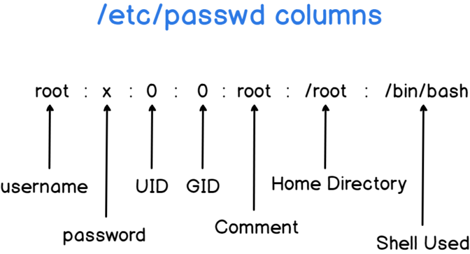
Exemple :
$ cat /etc/passwd
[...]
daemon:x:1:1:daemon:/usr/sbin:/usr/sbin/nologin
dnsmasq:x:109:65534:dnsmasq,,,:/var/lib/misc:/usr/sbin/nologin
eni:x:1000:1000:eni,,,:/home/eni:/bin/bash
[...]
sshd:x:108:65534::/run/sshd:/usr/sbin/nologin
[...]
www-data:x:33:33:www-data:/var/www:/usr/sbin/nologin
S’il y a un x dans la colonne “mdp” alors le mdp est dans le fichier /etc/shadow.
Le champ “GID” détermine quel est le groupe principal de l’utilisateur.
Le champ “nom complet” peut comporter des infos complémentaires comme le téléphone, etc. Ces informations peuvent être directement indiquées lors de la création de l’utilisateur ou via la commande chfn (change real user name and information - chfn [option] [LOGIN])
Le champ “répertoire personnel” contient le chemin du répertoire d’accueil de l’utilisateur, si celui-ci a été créé.
Le champ “shell” correspond au chemin du binaire du shell de l’utilisateur. Il est possible de le modifier avec la commande chsh (change login shell - chsh [options] [LOGIN]).
9.2.2 /etc/shadow
Ce fichier contient les informations cachées des utilisateurs.
Les champs du fichier sont :
- user
- mdp chiffré
- date dernier changement
- agemini.agemax
- periode avertissement
- période inactivité
- date fin validité
- champ réservé
$ sudo cat /etc/shadow
root:$y$j9T$ZD2FVp.xRUWn6fymn5Pux.$mqJtezUsD2fOtLJ4OJoGBbITBfH9pxVzllfR/NyCOtA:19044:0:99999:7:::
daemon:*:19044:0:99999:7:::
[...]
dnsmasq:*:19044:0:99999:7:::
[...]
lightdm:*:19044:0:99999:7:::
eni:$y$j9T$rRiN4T0N9aRfTbTz17l6T/$WVMEU9icTLqdQ3deWiuSAZzqdHrlaRNbmENNMeJt4A/:19044:0:99999:7:::
systemd-coredump:!*:19044::::::
User contient le nom de l’utilisateur
Mdp : contient le hash du mdp. Cette colonne est composée de 3 champs séparés par des “$”.
- Premier champs : algo de hashage
$1$signifie MD5$2a$signifie Blowfish$2$signifie Blowfish (manipulation correcte de caractères 8 bits)$5$signifie SHA-256-
$6$signifie SHA-512 -
Deuxième champ : le sel (string aléatoire ajouter au mdp avant de faire son hash).
-
Troisième champ : le hash du mdp + son sel.
Le fait d’utiliser un sel dans le stockage des mdp permet d’augmenter leur sécurité. Le principe du hash est de générer une chaine unique d’une certaine taille par rapport à une chaîne donnée. Donc si deux utilisateurs ont le même mdp, par exemple “iop” alors les hashs purs seront identiques. L’ajout du sel fait en sorte que les hashs soient différents, pourtant les utilisateurs ont le même mdp.
Date de dernier changement de mdp : en nombre de jours depuis le 01/01/1970. Une valeur de 0 force le changement du mdp par l’utilisateur à la prochaine connexion.
- Si ce champ est vide l’utilisateur ne subit pas les options de vieillissement du mot de passe.
Âge minimum : durée en jours que l’utilisateur devra attendre avant de pouvoir changer son mdp à nouveau.
- Si la valeur est vide ou à 0, cela signifie qu’il n’y a pas d’âge minimum.
Âge maximum : durée en jours après laquelle l’utilisateur devra changer son mot de passe. Une fois cette durée écoulée, le mdp restera valide mais il sera demandé à l’utilisateur de changer de mdp à la prochaine connexion.
- Un champs vide signifie qu’il n’y a aucun âge limite.
- Si l’âge maximum est inférieur à l’âge minimum, alors l’utilisateur ne pourra pas changer son mdp.
Période d’avertissement d’expiration du mdp : durée en jours pendant laquelle l’utilisateur sera averti avant que son mdp n’expire. Une valeur vide ou à 0 désactive la période d’avertissement.
Période d’inactivité du mdp : durée en jours pendant laquelle le mdp sera qd même accepté après son expiration. L’utilisateur devra mettre à jour son mdp à la prochaine connexion.
- Après expiration du mdp suivie de la période d’expiration, plus aucune connection n’est possible avec le mdp. L’utilisateur est prié de contacter son admin.
- Un champs vide ou à 0 signifie qu’aucune periode d’inactivité n’est imposée.
Date de fin de validité du compte : la date d’expiration du compte exprimée en nombre de jours depuis le 01/01/1970.
- la date d’expiration du compte est différente d’une expiration de mdp. Même si le mdp est valide, aucune connection ne sera possible si le compte a expiré.
- Un champs vide signifie que le compte n’expirera jamais
- Ce champs ne doit jamais être à 0 car cela signifierait que c’est soit un compte ayant expiré le 01/01/1970, ou qu’il n’a pas d’expiration. (sic)
9.2.3 Commandes de gestions des utilisateurs
9.2.3.1 Création (useradd / adduser)
La commande useradd permet de créer un nouvel utilisateur ou de mettre à jour les informations par défaut d’un utilisateur existant.
useradd is a low level utility for adding users. On Debian, administrators should usually use adduser(8) instead.
Syntaxe:
useradd [options] LOGIN
useradd -D, --defaults
useradd -D [options]
Options usuelles:
-m, --create-home: créer le home de l’utilisateur s’il n’existe pas.-M, --no-create-home: ne créer pas le home de l’utilisateur.-d, --home-dir HOME_DIR: pour spécifier le chemin du home. Par défaut sous/home/<user>. Cette valeur par défaut peut être changée dans/etc/defaults/useradd.-u, --uid UID: indique l’UID de l’utilisateur. Si omit,useraddutilisera le plus petit UID disponible.-g, --gid GROUP: le GID du groupe principal de l’utilisateur. Doit faire référence à un groupe déjà existant.-G, --groups GROUP1[, GROUP2,...[GROUPN]]]: indique la liste des groupes secondaires-s, --shell SHELL: précise le chemin absolu du binaire du shell de l’utilisateur. Si vide, c’est le shell par défaut qui sera défini. Ce shell par défaut peut être changé dans/etc/default/useradd.-r, --system: crée un compte utilisateur système. Pas de création de home pour lui sauf si-mest utilisé.
Fichier de configuration
Le fichier de configuration /etc/default/useradd :
eni@debian:~$ cat /etc/default/useradd
# Default values for useradd(8)
#
# The SHELL variable specifies the default login shell on your
# system.
# Similar to DSHELL in adduser. However, we use "sh" here because
# useradd is a low level utility and should be as general
# as possible
SHELL=/bin/sh
#
# The default group for users
# 100=users on Debian systems
# Same as USERS_GID in adduser
# This argument is used when the -n flag is specified.
# The default behavior (when -n and -g are not specified) is to create a
# primary user group with the same name as the user being added to the
# system.
# GROUP=100
#
# The default home directory. Same as DHOME for adduser
# HOME=/home
#
# The number of days after a password expires until the account
# is permanently disabled
# INACTIVE=-1
#
# The default expire date
# EXPIRE=
#
# The SKEL variable specifies the directory containing "skeletal" user
# files; in other words, files such as a sample .profile that will be
# copied to the new user's home directory when it is created.
# SKEL=/etc/skel
#
# Defines whether the mail spool should be created while
# creating the account
# CREATE_MAIL_SPOOL=yes
Exemple de création:
user='francois'
real_name='François'
mdp='password'
groupe_principal='admin'
groupe_secondaire='stagiaire documentation'
useradd -m -d /home/$user -G $group_name -s $shell
Notes sur /etc/skel
Lors de la création d’un utilisateur, si l’option -m est passée à useradd, alors le contenu du répertoire /etc/skel sera copié dans le répertoire d’accueil de l’utilisateur.
- skel is derived from the skeleton because it contains basic structure of home directory.
- The
/etc/skeldirectory contains files and directories that are automatically copied over to a new user’s when it is created from useradd command. - The default skel folder can be modifier in
etc/default/useradd(lineSKEL=/etc/skel) - Default permission of
/etc/skelisdrwxr-xr-x. - It is recommended to leave the permission of skel directory or its content as it is, as some programs/profils depend on
9.2.3.2 Modification (usermod)
La commande usermod permet de modifier un utilisateur.
Syntaxe:
usermod [options] LOGIN
Options usuelles:
-a, --append: ajouter l’utilisateur aux groupes supplémentaires. A n’utiliser qu’avec l’option-G.-d, --home HOME_DIR: indique le nouveau répertoire d’accueil de l’utilisateur. Si l’option-mest fournie, le contenu du répertoire actuel sera déplacé dans le nouveau.-e, --expiredate EXPIRE_DATE: date à laquelle le compte sera désactivé. La date est indiquée au format YYYY-MM-JJ ou en nombre de jours depuis le 01/01/1970. Si EXPIRE_DATE est vide alors l’expiration du compte sera désactiver.-f, --inactive DUREE_INACTIVITE: nombre de jours après l’expiration d’un mdp après lequel le compte est définitivement désactivé. Une valeur à 0 désactive le compte dès que le mdp a dépassé sa fin de validité, et une valeur de -1 désactive cette fonctionnalité.-g, --gid GROUP: nom ou id du nouveau groupe principal de l’utilisateur. Tout fichier du répertoire personnel de l’utilisateur appartenant au groupe principal précédent de l’utilisateur appartiendra à ce nouveau groupe.
Le groupe propriétaire des fichiers en dehors du répertoire personnel de l’utilisateur doit être modifié manuellement.-G, --groupes GROUP1[,GROUP2...[,GROUPN]]: liste des groupes secondaires de l’utilisateur.
Si l’utilisateur appartient déjà à un groupe qui n’est pas listé, l’utilisateur sera enlevé du groupe. Il est peut être utile d’ajouter l’option-a, --appendafin de ne pas perdre ces appartenances.-s, --shell: chemin du shell de l’utilisateur. Peut être configurer avec la commandechsh.-L, --lock: verrouille le mdp de l’utilisateur. Cette option ajoute un “!” devant le hash du mdp dans/etc/shadow.
Note : pour verrouiller le compte (et pas seulement l’accès au compte par un mdp), il est également nécessaire de placerDATE_FIN_VALIDITEà 1.-U, --unlock: Déverrouille le mdp de l’utilisateur.
9.2.3.3 Suppression (userdel)
La commande userdel permet de supprimer un utilisateur.
userdel is a low level utility for removing users. On Debian, administrators should usually use deluser(8) instead.
The userdel command modifies the system account files, deleting all entries that refer to the user name LOGIN. The named user must exist.
Syntaxe:
# userdel [OPTIONS] LOGIN
Options usuelles:
-r, --remove: Les fichiers présents dans le home de l’utilisateur seront également supprimés. Les fichiers de l’utilisateur présents dans d’autres répertoires ne seront pas supprimés.
9.2.3.4 Modification du mot de passe (passwd)
La commande passwd permet de modifier le mdp utilisateur. Si elle est executée par root, cette commande modifiera les champs du fichier /etc/shadow selon les options passées.
Syntaxe:
# passwd [OPTIONS] [LOGIN]
Options usuelles:
-e, --expire: fait expirer immédiatement le mdp de l’utilisateur. Celui-ci sera obligé de changer son mdp à sa prochaine connexion.-l, --lock: verrouille le mdp en ajoutant un “!” devant le hash du mot de passe dans/etc/shadow.-u, --unlock: déverrouille le mdp en supprimant le “!” devant le hash du mdp dans/etc/shadow.
Pour modifier certains champs du fichier /etc/shadow, il est possible aussi d’utiliser la commande chage si elle est installée.
9.2.4 Outils de vérification (getent / id)
La commande getent permet de consulter les groupes et les utilisateurs. Elle est plus simple à utiliser qu’un cat sur les fichiers /etc/group ou /etc/passwd.
NAME
getent - get entries from Name Service Switch libraries
SYNOPSIS
getent [option]... database key...
DESCRIPTION
The getent command displays entries from databases supported by the Name
Service Switch libraries, which are configured in /etc/nsswitch.conf. If
one or more key arguments are provided, then only the entries that match
the supplied keys will be displayed. Otherwise, if no key is provided,
all entries will be displayed (unless the database does not support enu‐
meration).
Usage:
$ getent passwd [LOGIN] # profil user
$ getent group [GROUP] # group appartenance
Exemples:
$ cat /etc/passwd | cut -d: -f1 # users only
$ cat /etc/passwd | awk -F: '{print $1}' # users only
$ getent passwd francois # getent passwd [LOGIN]
francois:x:1002:1001:François,,,:/home/francois:/bin/sh
$ cat /etc/group
$ groups francois
francois : admin stagiaires documentation
$ getent group stagiaires
stagiaires:x:1002:fred,francois
$ for f in francois fred fabrice; do getent passwd $f; done
francois:x:1001:1001::/home/francois:/bin/sh
fred:x:1002:1005:Frédéric,,,:/home/fred:/bin/bash
fabrice:x:1003:1006:Fabrice,,,:/home/fabrice:/bin/bash
eni@deb-desktop:~$ for f in francois fred fabrice; do id $f ; done
uid=1001(francois) gid=1001(admin) groups=1001(admin),1002(stagiaires),1003(documentation)
uid=1002(fred) gid=1005(fred) groups=1005(fred),1002(stagiaires),1003(documentation)
uid=1003(fabrice) gid=1006(fabrice) groups=1006(fabrice),1004(vip)
9.3 Changement d’identité et élévation de privilèges
9.3.1 la commande su
La commande su permet d’executer une commande avec l’utilisateur root.
Syntaxe:
$ su [options] [-] [user [argument...]]
Options usuelles:
-s SHELL, --shell=SHELL: utiliser un autre shell que celui indiqué dans/etc/passwdpour l’utilisateur cible.-,-l,--login: start the shell as a login shell with an environment similar to a real login. Faire un changement d’identité reproduisant complétement un login.-c COMMAND,--command=COMMAND: executer la commande, il est conseillé de mettre la commande entre simple quote.
9.3.2 la commande sudo
La commande sudo permet d’executer une commande en tant qu’un autre utilisateur. Cette commande demande le mdp de l’utilisateur et non le mdp root. L’élévation de privilège sera gardée en mémoire pour 5 minutes par défaut.
Exemples
- Executer une commande avec les droits root :
$ sudo apt update - Devenir root avec la commande sudo
$ sudo -i $ sudo -s
Notes:
Les systèmes Linux ont une gestion des utilisateurs assez frustre en ce qui concerne l’administration. Il faut être root pour pouvoir intervenir sur le système.
Mais la répartition des tâches en entreprise amène à considérer les tâches d’administration différemment. Les opérations répétitives telles que les changements de mdp, la gestion des comptes d’utilisateurs, les sauvegardes et restaurations doivent pouvoir être effectuées par des utilisateurs à qui l’on ne doit pas accorder le privilège root.
La commande sudo permet de déléguer des tâches précises d’administration à certains utilisateurs. Par exemple, il sera possible d’accorder les privilèges de gestion des utilisateurs à un groupe d’utilisateurs.
Afin qu’un utilisateur puisse utiliser la commande sudo, il faut qu’il soit renseigné dans le fichier de configuration /etc/sudoers et renseigner les commandes qu’il pourra utiliser.
Plus simplement, il est possible de donner tous les droits root à un utilisateur en l’ajoutant au groupe sudo.
Ajouter un utilisateur au groupe sudo
# usermod -aG sudo monUser
a: appendG: groupe secondaire
Voir TP 9 - Gestion des utilisateurs et des groupes
10. Droits sur les fichiers et répertoires
Les droits d’accès sur les fichiers sont directement inscrits dans l’inode des fichiers. Ils sont découpés en 3 colonnes : utilisateur propriétaire (user), groupe propriétaire (group) et les autres (other).
10.0 Notes perso
10.0.0 Types de fichiers
Types de fichiers:
-: standard (file)d: répertoirel: lien symboliqueb: fichier spécial mode blockc: fichier spécial mode caractèren: fichier spécial mode réseaup: named pipe
10.0.1 Permissions (rwx)
Permissions:
| user | group | other | ||||||
|---|---|---|---|---|---|---|---|---|
| r | w | x | r | w | x | r | w | x |
| 4 | 2 | 1 | 4 | 2 | 1 | 4 | 2 | 1 |
10.0.1.0 Change ownership (chown)
Change Ownership:
# chown userXX foo.txt
# chown userXX:groupXX foo.txt
# chown :groupXX foo.txt
# chown -R data-www:data-www /var/www
10.0.1.1 Change permission (chmod)
Change permissions:
$ chmod 640 foo.txt
$ chmod u+x foo.txt
$ chmod a+x foo.sh
$ chmod u=rwx,g=r,o=- foo.txt
u,g,o,a: user, group, other, all+,-,=: ajouter / supprimer / donner exactement un droitr,w,x,-: read, write, execute, nones: setuid / setgidt: sticky bit (verrouillage des modif au seul proprio)
10.0.1.2 Droits spéciaux (setuid, setgid, sticky bit)
10.0.1.2.1 setuid, setgid
setuid, setgid et sticky bit sont des permissions spéciales. setuid (set user id) et setgid permettent de modifier le droit d’exécution au niveau d’un utilisateur ou d’un groupe.
Qd setuid est ajoutée, le programme est lancé avec les droits du propriétaire quelque soit l’utilisateur qui le lance. setgid permet la même chose mais pour un groupe.
On peut voir les marqueurs en faisant un ls -l.
- s = il y a aussi le droit x de positionné
- S = il n’y a pas le droit x de positionné
$ ls -l /usr/bin/passwd
-rwsr-xr-x 1 root root 63960 Feb 7 2020 /usr/bin/passwd
Ajouter/retirer un droit spécial
$ chmod u+s foo.txt # ajouter permission setuid
$ chmod u-s foo.txt # retirer permission setuid
$ chmod g+s foo.txt # ajouter permission setgid
$ chmod g-s foo.txt # retirer permission setgid
$ ls -l foo*
-rwSr-Sr-- 1 eni eni 0 Feb 27 13:49 foo.txt
drwsr-sr-x 2 eni eni 4096 Feb 27 13:51 foo
10.0.1.2.2 sticky bit
Le problème avec setuid et setgid, c’est que les différents membres du groupe peuvent accidentellement supprimer les fichiers des autres users.
Pour forcer les users d’un même groupe à ne pouvoir modifier que leur fichiers, on utilise le Sticky Bit. Il représente des autorisations spéciales qui indique qu’un utilisateur à le droit de lire/écrire mais qu’il ne peut pas supprimer le fichier à moins d’en être le propriétaire.
Cela permet de dissocier le droit de modification et le droit de suppression.
Utilisation:
$ chmod +t projet/
$ ls -l
drwxr-xr-t 2 eni eni 4096 Feb 27 13:57 projet
- t = il y a aussi le droit x de positionné
- T = il n’y a pas le droit x de positionné
Le sticky bit est peut aussi être utilisé sur le dossier contenant un lien symbolique pour empêcher les utilisateurs de l’effacer. (RAPPEL : tous les users ont tous les droits sur un lien symbolique).
En octal, setuid=4, setgid=2, sticky bit=1
| special | user | group | other | ||||||||
|---|---|---|---|---|---|---|---|---|---|---|---|
| setuid | setgid | sticky bit | r | w | x | r | w | x | r | w | x |
| 4 | 2 | 1 | 4 | 2 | 1 | 4 | 2 | 1 | 4 | 2 | 1 |
| 1 | 7 | 7 | 4 | ||||||||
- Ex. 5754 = setuid + sticky bit + rwxr-xr–
- Ex. 1775 = sticky bit + 775 = seul le proprio peut supprimer le fichier.
- Ex. 2755 = setgid + 755 = seul un utisateur du group propriétaire peut supprimer le fichier.
$ chmod 5754 foo.txt
$ ls -l
-rwsr-xr-T 1 eni eni 0 Feb 27 22:26 foo.txt
$ chmod 5757 foo.txt
$ ls -l foo.txt
-rwsr-xrwt 1 eni eni 0 Feb 27 22:26 foo.txt
- Ex. 7775 : user & group peuvent modifier fichier mais pas le supprimer, sauf si user est proEx. prio.
- Ex. 2775 : group peut modifier le fichier et le supprimer. Les user normaux qui ne sont pas dans le groupe proprio ne peuvent pas le modifier.
- Ex. 4775 : Seul le user proprio peut modifier et supprimer le fichier.
- Ex. 1775 : user peut modifier mais pas supprimer sauf si c’est lui le propriétaire.
$ i=7755 && chmod $i foo* && ls -l | grep foo
drwsr-sr-t 2 eni eni 4096 Feb 27 22:43 foo
-rwsr-sr-t 1 eni eni 0 Feb 27 22:26 foo.txt
10.1 Modification des droits et propriétaire
10.1.1 Modification des droits (chmod)
10.1.2 Modification du propriétaire (chown)
10.2 umask
L’umask détermine les permissions par défaut à la création d’un fichier ou un dossier
umask sets file mode creation mask.
It sets the calling process’s file mode creation mask (umask) to mask & 0777 (i.e only the file permission bits of mask are used), and returns the previous value of the mask.
La valeur de l’umask sera “soustraite” à la valeur des droits maximaux à la création : 0666 pour un fichier, 0777 pour un répertoire.
Sur Debian, l’umask par défaut des utilisateurs est de 0022. Il est important que l’umask de root et des utilisateurs de service (UID < 1000) reste à 0022. Il est possible pour chaque utilisateur de changer son umask avec la commande umask.
Permission_par_défaut = permissions_max - valeur_umask
Ex. 0755 = 0777 - 0022
Source:
#include <sys/types.h>
#include <sys/stat.h>
mode_t umask(mode_t mask);
Pour avoir un umask spécifique lors de sa connexion, il sera possible d’ajouter une entrée avec la commande umask dans son fichier de chargement de son shell (le fichier ~/.bashrc pour le shell bash).
Syntaxe:
umask [MODE]
Exemples:
eni@deb-desktop:~$ umask
0022
eni@deb-desktop:~$ umask 0007 # modifie temporairement !
eni@deb-desktop:~$ umask
0007
eni@deb-desktop:~$ umask 0022
eni@deb-desktop:~$ umask
0022
10.3 Droits spéciaux
SetUID
Symbolique sur la colonne user. Champ d’exécution : s=comprend aussi le droit x, S=n’a pas le droit x.
Permet d’executer un fichier avec les droits du propriétaire. N’est pas utilisé sur un répertoire.
Octal 4.
SetGID
Symbolique sur la colonne group. Champ d’exécution : s=comprend aussi le droit x, S=n’a pas le droit x.
Permet d’executer un fichier avec les droits du groupe. Ex. /usr/bin/crontab s’execute avec le droit SetGID.
Tout fichier créé dans un dossier avec SetGID héritera du groupe du dossier parent. Les sous-dossiers créés hériteront quant à eux du droit SetGID.
Utile lorsque plusieurs utilisateurs travaillent sur un projet commun.
Octal 2.
Sticky bit
Symbolique sur la colonne others. Champ d’exécution : t=comprend aussi le droit x, T=n’a pas le droit x.
Lorsqu’il est positionné sur un fichier, il permet la mise en zone de swap. Le but est que le fichier puisse être stocké en mémoire pour pouvoir être relancé rapidement. (gné?)
Tout fichier créé ne pourra être supprimé que par son propriétaire et par root. Ex. /tmp
Voir TP 10 - Gestion des permissions
11. Maintenance du système en production
11.1 Nécessité d’analyser son système
Il est important d’analyser son OS pour vérifier que tout fonctionne correctement. Il y a deux types d’outils permettant cette analyse : les outils proactifs et réactifs.
Afin d’analyser facilement son système, il est utile de lire les journaux du système (logs).
Afin de préserver un bon fonctionnement, il est utile d’automatiser des tâches administratives.
Enfin, il est important de connaître des commandes de prise d’informations du système, la RAM, le CPU, les processus, etc.
11.2 Gestion des journaux système et applicatif
La gestion des journaux applicatifs est gérée sous Debian par 2 services : journald au travers de systemd et l’ancien système rsyslog au travers de journald.
11.2.1 journald au travers de systemd
Tous les services, programmes, tâches gérées par systemd ont leur comportement remontés dans journald. Le fait d’exécuter la commande systemctl status DAEMON affiche le status du service mais aussi les logs de l’application (si executée en mode root).
Ces logs sont enregistrés dans une base de données gérée par journald. Il est donc possible de consulter les logs complets en requêtant cette bdd avec la commande journalctl, dont le fichier de config est /etc/systemd/journald.
11.2.1.1 journalctl
journalctl - Query the systemd journal.
Synopsis
journalctl [OPTIONS...] [MATCHES...]
Description
journalctl may be used to query the contents of the systemd(1) journal as written by systemd-journald.service(8).
If called without parameters, it will show the full contents of the journal, starting with the oldest entry collected.
If one or more match arguments are passed, the output is filtered accordingly. A match is in the format “FIELD=VALUE”, e.g. “_SYSTEMD_UNIT=httpd.service”, referring to the components of a structured journal entry. […]
- Pour naviguer dans le journal, il est préférable d’utiliser la commande
less. -
Pour visualiser les logs en temps réel, on utilise le commutateur
-f -
Voir les logs d’un service donné :
journalctl -u [service]
root@debian:~# journalctl -u cron
‐‐ Logs begin at Sun 2019‐04‐21 07:14:36 CEST, end at Thu 2019‐05‐09 13:24:52 CEST. ‐‐
avril 21 07:17:01 debian CRON[4404]: pam_unix(cron:session): session opened for user root by (uid=0)
avril 21 07:17:01 debian CRON[4405]: (root) CMD ( cd / && run‐parts ‐‐report /etc/cron.hourly)
avril 21 07:30:01 debian CRON[4409]: pam_unix(cron:session): session opened for user root by (uid=0)
- Voir les logs pour un PDI donné : `journalctl _PID=PID
root@debian:~# journalctl _PID=1
‐‐ Logs begin at Sun 2019‐04‐21 07:14:36 CEST, end at Thu 2019‐05‐09 13:24:52 CEST. ‐‐
avril 21 08:01:38 debian systemd[1]: Started Run anacron jobs.
avril 21 08:01:38 debian systemd[1]: anacron.timer: Adding 2min 48.679199s random time.
avril 21 08:53:38 debian systemd[1]: Starting Daily apt download activities...
avril 21 08:53:45 debian systemd[1]: Started Daily apt download activities.
avril 21 08:53:45 debian systemd[1]: apt‐daily.timer: Adding 10h 23.576305s random time.
- Voir les logs d’un programme :
journalctl /usr/bin/sshd
root@debian:~# journalctl /usr/sbin/sshd
‐‐ Logs begin at Sun 2019‐04‐21 07:14:36 CEST, end at Thu 2019‐05‐09 13:24:52 CEST. ‐‐
mai 06 09:56:38 debian sshd[18899]: pam_unix(sshd:auth): authentication failure; logname= uid=0 euid=0 tty=ssh
ruser= rhost=10.9.121.13 user=root
mai 06 09:56:40 debian sshd[18899]: Failed password for root from 10.9.121.13 port 60040 ssh2
mai 06 09:56:48 debian sshd[18901]: Accepted password for penthium from 10.9.121.13 port 60042 ssh2
mai 06 09:56:48 debian sshd[18901]: pam_unix(sshd:session): session opened for user penthium by (uid=0)
mai 06 15:48:06 debian sshd[18901]: pam_unix(sshd:session): session closed for user penthium
- Voir les logs par niveau de priorité :
journalctl ‐p LEVEL
root@debian:~# journalctl ‐p err
‐‐ Logs begin at Sun 2019‐04‐21 07:14:36 CEST, end at Thu 2019‐05‐09 13:24:52 CEST. ‐‐
mai 06 07:42:43 debian kernel: sd 3:0:0:0: [sdc] No Caching mode page found
mai 06 07:42:43 debian kernel: sd 3:0:0:0: [sdc] Assuming drive cache: write through
mai 06 10:05:19 debian gdm‐password][18939]: pam_unix(gdm‐password:auth): conversation failed
mai 06 10:05:19 debian gdm‐password][18939]: pam_unix(gdm‐password:auth): auth could not identify password for
[penthium]
Les différents niveaux de priorités sont du plus critique au plus informatif : emerg, alert, crit, err, warning, notice, info, debug
Il est possible de cumuler les options :
root@debian:~# journalctl ‐f /usr/sbin/sshd ‐p info
‐‐ Logs begin at Sun 2019‐04‐21 07:14:36 CEST. ‐‐
mai 06 09:56:48 debian sshd[18901]: Accepted password for penthium from 10.9.121.13 port 60042 ssh2
mai 06 09:56:48 debian sshd[18901]: pam_unix(sshd:session): session opened for user penthium by (uid=0)
mai 06 15:48:06 debian sshd[18901]: pam_unix(sshd:session): session closed for user penthium
11.2.2 rsyslog à travers journald
journald a certes l’avantage de stocker les logs dans une base de données mais ces logs sont uniquement conservés pour le démarrage en cours.
Pour conserver les logs, Debian utilise rsyslog. Tous les logs de journalctl sont transférés à rsyslog.
11.2.2.1 Principe de fonctionnement
rsyslog travaille sur des “facilities” et des niveaux de priorités qui déclenchent une action.
Les facilities les plus courantes sont :
- auth : utilisé pour des évènements concernant la sécurité ou l’authentification à travers des applications d’accès (ex. ssh)
- authpriv : utilisé pour les messages relatifs au contrôle d’accès.
- daemon : utilisé pour les différents processus systèmes et d’application.
- kern : log les events du kernel
- mail : log les events des services mails
- user : facility par défaut quand aucune n’est spécifiée
- local0 à local7 : utilisées pour les messages de differents programmes.
- * : designe toutes les facilities.
- none : désigne aucune facility.
Les différents niveaux de priorité sont :
- emerg : urgence, système inutilisable
- alert : alerte, intervention immédiate nécessaire
- crit : erreur système critique
- err : erreur de fonctionnement
- warning : avertissement
- notice : évènements normaux devant être signalés
- info : pour information
- debug : message de débogage
Les actions correspondent généralement à l’écriture du journal dans un fichier, mais il est possible de configurer syslog pour qu’il envoie les messages à enregistrer vers un autre serveur rsyslog.
Fichier de configuration : /etc/rsyslog (extraits)
auth,authpriv.*
*.*;auth,authpriv.none
#cron.*
daemon.*
kern.*
lpr.*
mail.*
user.*
/var/log/auth.log
‐/var/log/syslog
/var/log/cron.log
‐/var/log/daemon.log
‐/var/log/kern.log
‐/var/log/lpr.log
‐/var/log/mail.log
‐/var/log/user.log
- devant certains chemins indique que l’enregistrement des logs est asynchrone.
11.2.3 Commande d’interaction avec journald et rsyslog
Il est possible de faire des tests ou créer des scripts qui interagissent avec journald et rsyslog via la commande logger.
La commande logger permet de logger des messages dans le system log.
Syntaxe
logger [options] [message]
logger makes entries in the system log.
When the optional message argument is present, it is written to the log. If it is not present, and the -f option is not given either, then standard input is logged.
Options usuelles
-f, --file FILE: log the content of the specified FILE.-p, --priority PRIORITY: enter the message into the log with the specified PRIORITY
Exemple : écrire un message cron de niveau info
root@debian:~# logger -p cron.info message de test
Voir TP 11 - Gestion de la journalisation
11.3 Planification des tâches
La planification des tâches se fait au travers du service cron. Il existe 2 types de planification : la planification utilisateur et la planification système.
cron
cron - daemon to execute scheduled commands (Vixie Cron)
SYNOPSIS
cron [-f] [-l] [-L loglevel]
DESCRIPTION
cron is started automatically from /etc/init.d on entering multi-user run‐levels.
11.3.1 Planification utilisateur
La commande crontab permet d’installer, desinstaller ou lister les tables utilisées par le service cron.
Syntaxe
crontab [-u USER] FILE
crontab [-u USER] [-i] { -e | -l | -r }
-u: name of user whose crontab is to be used. Note that su can confuse crontab and that if you are running inside of su you should always use the -u option for safety’s sake.-e: edit the current crontab using the editor defined in VISUAL or EDITOR env var. The modified crontab will be installed automatically upon exit.-l: display current crontab in output (list)-r: remove current crontab-i: prompt the user for comfirmation before removing the crontab. Modifies the -r option.
Description
crontab - maintain crontab files for individual users (Vixie Cron)
crontab is the program used to install, deinstall or list the tables used to drive the cron(8) daemon in Vixie Cron. Each user can have their own crontab, and though these are files in /var/spool/cron/crontabs, they are not intended to be edited directly.
Au premier lancement de la commande Debian vous proposera de choisir l’éditeur de texte à utiliser, sauf si les variables d’environnement VISUAL ou EDITOR sont définies.
penthium @debian:~# crontab ‐e
no crontab for root ‐ using an empty one
Select an editor. To change later, run 'select‐editor'.
1. /bin/nano
<‐‐‐‐ easiest
2. /usr/bin/vim.basic <‐‐‐‐ the best 😊
3. /usr/bin/vim.tiny
Choose 1‐3 [1]: 2
Composition du fichier:
- minutes : de 0 à 59
- heure : de 0 à 23
- jour du mois : de 1 à 31
- mois : de 1 à 12
- jour de la semaine : de 0 à 7, avec 0=7=dimanche)
- commande : la commande à executer suivant la planification (il est fortement conseillé d’utiliser un script pour des raisons de simplification du suivi des actions).
Pour les 5 premières colonnes, il est possible de les formater :
- avec des listes en utilisant le caractère
,.- Ex.
1,2,3dans la colonne des jours de la semaine génère une tâche tous les lundi, mercredi et vendredi.
- Ex.
- avec des intervalles en utilisant
-:- Ex.
10-20dans la colonne jours du mois pour générer une tâche exécutée du 10 au 20
- Ex.
- avec un joker en utilisant
*- Ex.
*dans la colonne des heures indique toutes les heures
- Ex.
- avec un répétiteur en utilisant
/- Ex.
*/2dans la colonne des mois génère une tâche exécutée en Janvier, Mars, Mai, Juillet, Septembre, Novembre.
- Ex.
Exemple de configuration: tâche exécutée chaque lundi à 5h du matin durant toutes l’année quel que soit le mois.
0 5 * * 1 /opt/bin/backup.sh
11.3.2 Planification système
Cron utilise une table spéciale pour les tâches de planification du système. Ces tâches sont déclarées dans le fichier /etc/crontab.
eni@deb-srv:~$ cat /etc/crontab
# /etc/crontab: system-wide crontab
# Unlike any other crontab you don't have to run the `crontab'
# command to install the new version when you edit this file
# and files in /etc/cron.d. These files also have username fields,
# that none of the other crontabs do.
SHELL=/bin/sh
PATH=/usr/local/sbin:/usr/local/bin:/sbin:/bin:/usr/sbin:/usr/bin
# Example of job definition:
# .---------------- minute (0 - 59)
# | .------------- hour (0 - 23)
# | | .---------- day of month (1 - 31)
# | | | .------- month (1 - 12) OR jan,feb,mar,apr ...
# | | | | .---- day of week (0 - 6) (Sunday=0 or 7) OR sun,mon,tue,wed,thu,fri,sat
# | | | | |
# * * * * * user-name command to be executed
17 * * * * root cd / && run-parts --report /etc/cron.hourly
25 6 * * * root test -x /usr/sbin/anacron || ( cd / && run-parts --report /etc/cron.daily )
47 6 * * 7 root test -x /usr/sbin/anacron || ( cd / && run-parts --report /etc/cron.weekly )
52 6 1 * * root test -x /usr/sbin/anacron || ( cd / && run-parts --report /etc/cron.monthly )
#
C’est le même système de notation à la différence qu’il y a une colonne supplémentaire pour préciser le nom de l’utilisateur qui exécutera la tâche (avant la colonne “commande à exécuter”).
Ici, il y a 4 tâches cron lancées toutes les heures, tous les jours, toutes les semaines et tous les mois. Le fonctionnement d’anacron est expliqué ci-après.
11.3.3 Lancement des tâches non executées avec anacron
Il n’est pas rare pour un poste client que le système soit coupé durant la nuit. Afin de pouvoir lancer les tâches prévues pendant ces temps de coupure, le système va utiliser des travaux d’anacron.
anacron va comparer la date contenue dans un fichier correspondant à un travail d’anacron avec la date du jour. Suivant le paramétrage du travail d’anacron, il executera une commande ou pas. Ces fichiers sont dans le répertoire /var/spool/anacron
anacron s’appuie sur le fichier de configuration /etc/anacrontab :
# /etc/anacrontab: configuration file for anacron
# See anacron(8) and anacrontab(5) for details.
SHELL=/bin/sh
PATH=/usr/local/sbin:/usr/local/bin:/sbin:/bin:/usr/sbin:/usr/bin
HOME=/root
LOGNAME=root
# These replace cron's entries
1 5 cron.daily run‐parts ‐‐report /etc/cron.daily
7 10 cron.weekly run‐parts ‐‐report /etc/cron.weekly
@monthly 15 cron.monthly run‐parts ‐‐report /etc/cron.monthly
- col.1 : indique le nombre de jours maximum entre 2 travaux
- col.2 : indique le nombre de minutes de décalage avant l’exécution de la commande située dans la 3e colonne.
- col.3 : commande
11.3.3.1 Analyse d’un travail d’anacron durant le démarrage du système
Pour comprendre le fonctionnement d’anacron, l’explication suivante va s’appuyer sur le travail cron.daily.
Tous les jours si le système reste allumé 24/24, cron va executer cette tâche à 6h25 :
25 6 * * * root test -x /usr/sbin/anacron || ( cd / && run-parts --report /etc/cron.daily )
Cette tâche a pour effet de lancer tous les scripts présents dans le répertoire /etc/cron.daily
En regardant dans ce répertoire, on voit qu’il y a un fichier 0anacron. Ce script execute une simple commande : anacron -u cron.daily.
Cette commande a pour effet de mettre à jour le fichier /var/spool/anacron/cron.daily en y mettant la date du jour.
Donc si le système tourne 24h/24 ce fichier est mis à jour tous les jours.
Si le système est arrêté à 6h25 pour une raison ou une autre, alors la tâche cron.daily n’est pas exécutée et la mise à jour du fichier /var/spool/anacron/cron.daily n’est pas faite.
Durant la phase de démarrage du système, anacron analysera la date à l’intérieur du fichier /var/spool/anacron/cron.daily et voyant qu’il y a plus d’un jour de différence, il lancera les commandes configurées dans la table anacron.
Voir TP 12 - Gestion de la planification de tâches
11.4 Gestion de la taille des fichiers de log
Lorsqu’il s’agit de conserver des traces de journaux, plusieurs questions se posent : - Pour combien de temps ? - Quelle sera la taille de stockage utilisée ?
Sachant que certaines informations doivent être conservées pour une durée imposée par la législation française (ex. les logs d’activité internet).
11.4.1 avec journald
Nativement journald stocke ses logs dans une base de données volatile dans /run/log/journal. Mais il est possible de demander à journald de garder les logs de façon durable. Dans son fichier de configuration /etc/systemd/journald.conf, on peut paramétrer le type de storage via le paramètre #Storage=auto qui est en mode auto par défaut (il est commenté par défaut mais journald utilise la valeur auto par défaut de toute façon).
Le fait de créer un répertoire /var/log/journal rendra la conservation des logs durable.
La taille de bdd peut vite devenir conséquente sur un système fortement utilisé. Par défaut, journald utilisera un maximum de 10% du système de fichiers hébergeant /var/log/journald.
Il est possible de définir la taille maximum utilisée sur le système de fichier de la bdd avec le paramètre SystemMaxUse=. De plus il est possible de dire que la bdd sera subdivisée en plusieurs fichiers de taille fixe avec le paramètre SystemMaxFileSize=.
Bien évidemment si la décision est prise de garder les logs de journald de façon définitive, il sera peut-être intéresssant de stopper rsyslog afin d’éviter les doublons d’information.
root@debian:~# systemctl disable rsyslog
11.4.2 avec logrotate
Le programme logrotate permet d’effectuer une rotation des logs système, de les compresser ou encore de les envoyer par mail.
Il est executer par une tâche cron système tous les jours. Cette tâche est localisée dans /etc/cron.daily/logrotate.
SYNOPSIS logrotate [–force] [–debug] [–state file] [–skip-state-lock] [–verbose] [–log file] [–mail command] config_file [config_file2 …]
DESCRIPTION logrotate is designed to ease administration of systems that generate large numbers of log files. It allows automatic rotation, compression, removal, and mailing of log files. Each log file may be handled daily, weekly, monthly, or when it grows too large.
Le fichier de configuration principal /etc/logrotate.conf définit des valeurs de comportement par défaut.
Exemple de configuration
/var/log/squid/access.log {
daily
compress
delaycompress
rotate 366
create 640
}
La rotation du fichier /var/log/squid/access.log sera effectuée tous les jours (daily) durant 366 jours (rotate 366). La rotation créera un fichier avec access.log avec des droits en octal 640 (create 640) et le fichier de rotation sera compressé à sa 2eme rotation (compress, delaycompress).
11.5 Outils d’analyse du système
Voici une liste non exhaustive de commande permettant de prendre des informations sur le système.
11.5.1 Prise d’information sur le système
11.5.1.1 Connaître la version du système (/etc/debian_version)
eni@deb-srv:~$ cat /etc/debian_version
11.2
11.5.1.2 Connaître la version du kernel actif et son architecture (uname -a)
eni@deb-srv:~$ uname -a
Linux deb-srv 5.10.0-11-amd64 \#1 SMP Debian 5.10.92-1 (2022-01-18) x86_64 GNU/Linux
11.5.1.3 Connaître le type de CPU (lscpu)
eni@deb-srv:~$ lscpu
Architecture : x86_64
Mode(s) opératoire(s) des processeurs : 32-bit, 64-bit
Boutisme : Little Endian
Tailles des adresses: 43 bits physical, 48 bits virtual
Processeur(s) : 1
Liste de processeur(s) en ligne : 0
Thread(s) par cœur : 1
Cœur(s) par socket : 1
Socket(s) : 1
Nœud(s) NUMA : 1
Identifiant constructeur : GenuineIntel
Famille de processeur : 6
Modèle : 60
Nom de modèle : Intel(R) Core(TM) i5-4690 CPU @ 3.50GHz
Révision : 3
Vitesse du processeur en MHz : 3491.930
BogoMIPS : 6983.86
Constructeur d'hyperviseur : VMware
Type de virtualisation : complet
Cache L1d : 32 KiB
Cache L1i : 32 KiB
Cache L2 : 256 KiB
Cache L3 : 6 MiB
Nœud NUMA 0 de processeur(s) : 0
Vulnerability Itlb multihit: KVM: Mitigation: VMX unsupported
Vulnerability L1tf: Mitigation; PTE Inversion
Vulnerability Mds: Mitigation; Clear CPU buffers; SMT Host stat
e unknown
Vulnerability Meltdown: Mitigation; PTI
Vulnerability Spec store bypass: Mitigation; Speculative Store Bypass disable
d via prctl and seccomp
Vulnerability Spectre v1: Mitigation; usercopy/swapgs barriers and __u
ser pointer sanitization
Vulnerability Spectre v2: Mitigation; Full generic retpoline, IBPB con
ditional, IBRS_FW, STIBP disabled, RSB filli
ng
Vulnerability Srbds: Unknown: Dependent on hypervisor status
Vulnerability Tsx async abort: Not affected
Drapeaux : fpu vme de pse tsc msr pae mce cx8 apic sep
mtrr pge mca cmov pat pse36 clflush mmx fxsr
sse sse2 ss syscall nx pdpe1gb rdtscp lm co
nstant_tsc arch_perfmon nopl xtopology tsc_r
eliable nonstop_tsc cpuid pni pclmulqdq ssse
3 fma cx16 pcid sse4_1 sse4_2 x2apic movbe p
opcnt tsc_deadline_timer aes xsave avx f16c
rdrand hypervisor lahf_lm abm cpuid_fault in
vpcid_single pti ssbd ibrs ibpb stibp fsgsba
se tsc_adjust bmi1 avx2 smep bmi2 invpcid xs
aveopt arat md_clear flush_l1d arch_capabili
ties
11.5.1.4 Lister les informations des périphériques PCI (lspci)
eni@deb-srv:~$ lspci
00:00.0 Host bridge: Intel Corporation 440BX/ZX/DX - 82443BX/ZX/DX Host bridge (rev 01)
00:01.0 PCI bridge: Intel Corporation 440BX/ZX/DX - 82443BX/ZX/DX AGP bridge (rev 01)
00:07.0 ISA bridge: Intel Corporation 82371AB/EB/MB PIIX4 ISA (rev 08)
00:07.1 IDE interface: Intel Corporation 82371AB/EB/MB PIIX4 IDE (rev 01)
00:07.3 Bridge: Intel Corporation 82371AB/EB/MB PIIX4 ACPI (rev 08)
00:07.7 System peripheral: VMware Virtual Machine Communication Interface (rev 10)
00:0f.0 VGA compatible controller: VMware SVGA II Adapter
00:10.0 SCSI storage controller: Broadcom / LSI 53c1030 PCI-X Fusion-MPT Dual Ultra320 SCSI (rev 01)
00:11.0 PCI bridge: VMware PCI bridge (rev 02)
00:15.0 PCI bridge: VMware PCI Express Root Port (rev 01)
00:15.1 PCI bridge: VMware PCI Express Root Port (rev 01)
00:15.2 PCI bridge: VMware PCI Express Root Port (rev 01)
02:00.0 USB controller: VMware USB1.1 UHCI Controller
02:01.0 Ethernet controller: Intel Corporation 82545EM Gigabit Ethernet Controller (Copper) (rev 01)
02:02.0 Multimedia audio controller: Ensoniq ES1371/ES1373 / Creative Labs CT2518 (rev 02)
02:03.0 USB controller: VMware USB2 EHCI Controller
02:05.0 Ethernet controller: Intel Corporation 82545EM Gigabit Ethernet Controller (Copper) (rev 01)
11.5.1.5 Lister les informations des périphériques USB (lsusb)
eni@deb-srv:~$ lsusb
Bus 002 Device 001: ID 1d6b:0002 Linux Foundation 2.0 root hub
Bus 001 Device 003: ID 0e0f:0002 VMware, Inc. Virtual USB Hub
Bus 001 Device 002: ID 0e0f:0003 VMware, Inc. Virtual Mouse
Bus 001 Device 001: ID 1d6b:0001 Linux Foundation 1.1 root hub
11.5.1.6 Lister les informations sur les disques, partitions LVM, et système de fichiers
Ces commandes ont déjà été abordées dans le cours : fdisk -l, pvs, vgs, lvs, df -h, lsblk, blkid.
11.5.1.7 Lister les informations sur les répertoires et les fichiers (du, ls, file, lsof)
du - Disk Usage: estimate file space usage
reno@debian10-TITAN:~$ du -hs /media/reno/Playground/MAGASIN-F1/SERIES-F2/
111G /media/reno/Playground/MAGASIN-F1/SERIES-F2/
reno@debian10-TITAN:~$ du -cs /media/reno/Playground/MAGASIN-F1/SERIES-F2/
115968163 /media/reno/Playground/MAGASIN-F1/SERIES-F2/
115968163 total
reno@debian10-TITAN:~$ du -chs /media/reno/Playground/MAGASIN-F1/SERIES-F2/
111G /media/reno/Playground/MAGASIN-F1/SERIES-F2/
111G total
ls - list directory content
root@debian:~# ls ‐l fic
‐rw‐r‐‐r‐‐ 1 root root 7973 mai 10 10:11 fic
file - determine file type
eni@deb-srv:~$ file /bin/bash
/bin/bash: ELF 64-bit LSB pie executable, x86-64, version 1 (SYSV), dynamically linked, interpreter /lib64/ld-linux-x86-64.so.2, BuildID[sha1]=3313b4cb119dcce16927a9b6cc61dcd97dfc4d59, for GNU/Linux 3.2.0, stripped
lsof - list open files
root@debian:~# lsof /root
lsof: WARNING: can't stat() fuse.gvfsd‐fuse file system /run/user/1000/gvfs
Output information may be incomplete.
COMMAND PID USER FD TYPE DEVICE SIZE/OFF NODE NAME
bash 2074 root cwd DIR 254,0 4096 781836 /root
bash 2179 root cwd DIR 254,0 4096 781836 /root
lsof 3826 root cwd DIR 254,0 4096 781836 /root
lsof 3827 root cwd DIR 254,0 4096 781836 /root
11.5.1.8 Performances et processus
11.5.1.8.1 Infos en temps réel (top, htop, atop, glances)
Plusieurs outils sont disponibles pour monitorer les process en temps réel.
top (native)
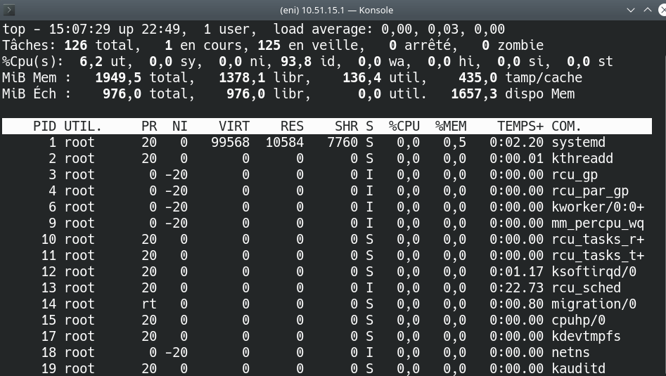
htop (à installer)
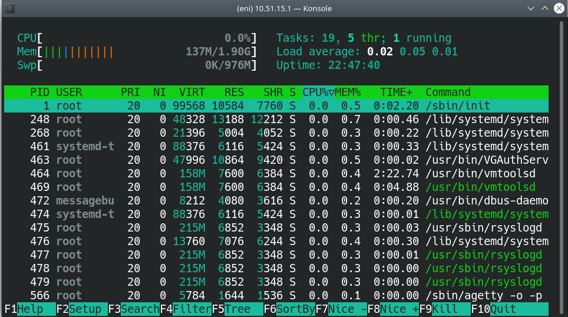
$ sudo apt install htop
atop (à installer)
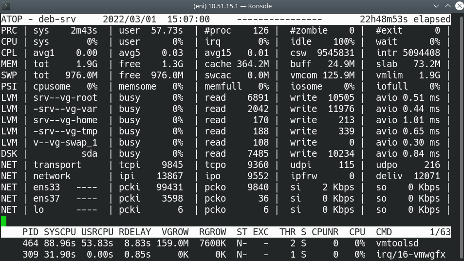
$ sudo apt install atop
glances (à installer) - écrit en python3
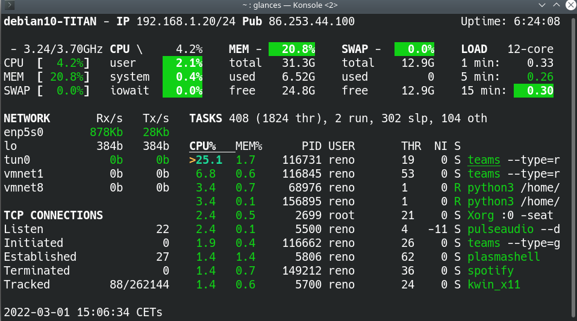
Glances est une version plus poussée des outils d’analyse en temps réel avec beaucoup d’options. Il peut être installé en mode client/serveur, remonter ses informations dans des logiciels de supervision, etc. Plus d’information sur le site du projet : nicolargo/glances
Installation avec pip :
$ pip install --user glances
11.5.1.8.2 Infos directes (ps, pgrep, free)
lister les processus avec ps
La commande ps permet d’afficher les processus.
eni@deb-srv:~$ ps ef
PID TTY STAT TIME COMMAND
960 pts/0 Ss 0:00 -bash LC_ADDRESS=fr_FR.UTF-8 LC_NAME=fr_FR.UTF-8 LC_MON
3108 pts/0 R+ 0:00 \_ ps ef SHELL=/bin/bash LC_ADDRESS=fr_FR.UTF-8 LC_NAM
lister les processus avec pgrep
La commande pgrep permet d’utiliser la recherche par regex.
eni@deb-desktop:~$ pgrep -l vi
632 VGAuthService
1254 dconf-service
Information sur la RAM
La commande free permet d’afficher des informations simplifiées.
eni@deb-desktop:~$ free -h
total used free shared buff/cache available
Mem: 3.8Gi 984Mi 997Mi 47Mi 1.9Gi 2.6Gi
Swap: 3.8Gi 0B 3.8Gi
Voir TP 13 - Relevé d’informations système et gestion des processus